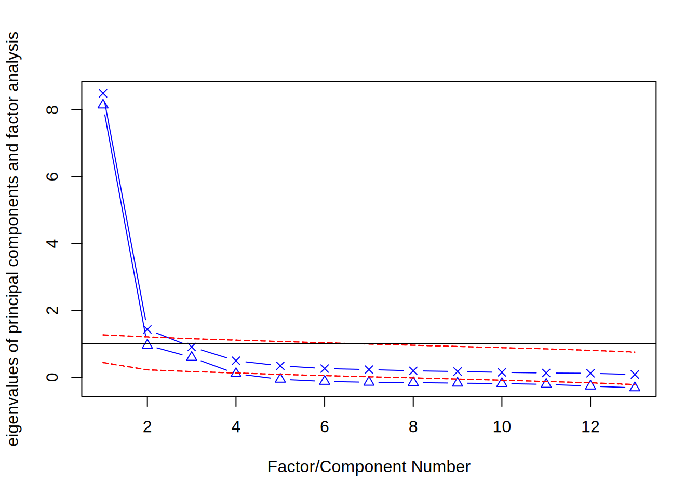
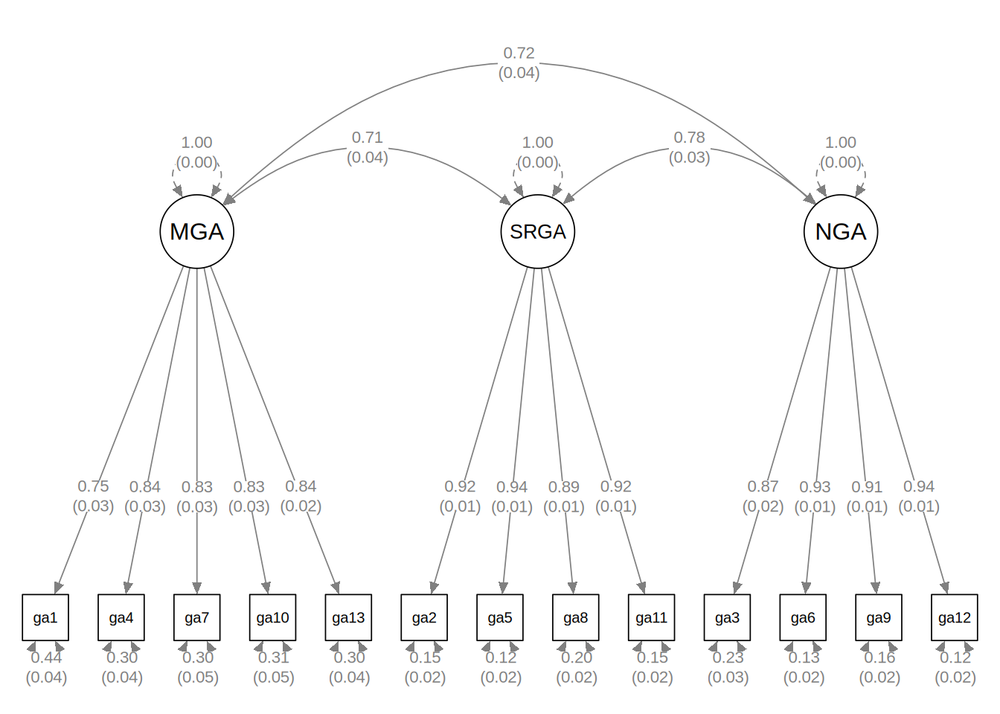
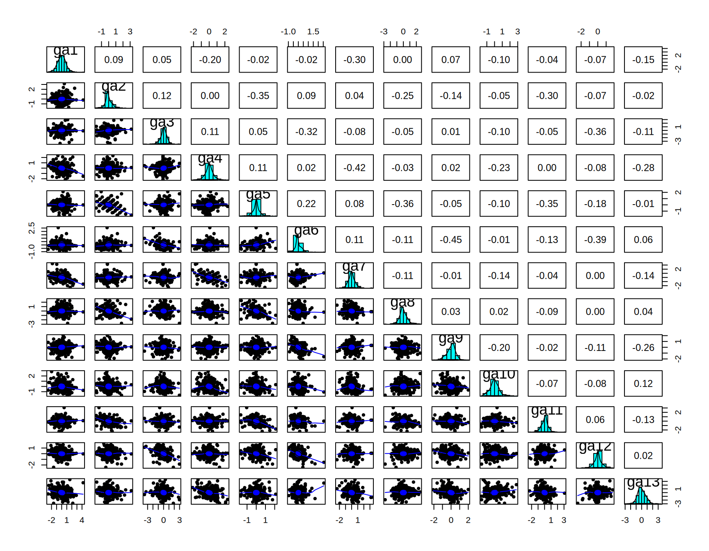

(Bnous) Another Example of Confirmatory Factor Analysis
asags <- read.csv("https://osf.io/download/sy2d4/")Dataset: Attainment of School Achievement Goal Scale (A-SAGS)
The A-SAGS (Boivin et al., 2026) measures the perceived attainment of three types of achievement goals in academic settings. Participants rated 13 items on a 7-point Likert scale (1 = not at all to 7 = completely).
| Factor | Items | Description |
|---|---|---|
| MGA (Mastery Goal Attainment) | ga1, ga4, ga7, ga10, ga13 | Learning and developing competence |
| SRGA (Social Reference Goal Attainment) | ga2, ga5, ga8, ga11 | Outperforming others |
| NGA (Nurturance Goal Attainment) | ga3, ga6, ga9, ga12 | Helping others succeed |
The three subscales are hypothesized to reflect a single higher-order construct: Goal Attainment (GA). The dataset has N = 527 with some missing values.
Descriptive Statistics
modelsummary::datasummary_skim(asags)| Unique | Missing Pct. | Mean | SD | Min | Median | Max | Histogram | |
|---|---|---|---|---|---|---|---|---|
| ga1 | 8 | 1 | 4.1 | 1.5 | 1.0 | 4.0 | 7.0 | ![](data:image/png;base64,%20iVBORw0KGgoAAAANSUhEUgAABLAAAAGQCAMAAACJa2lsAAAApVBMVEUAAAA0NDQ2NjY8PDxAQEBBQUFJSUlQUFBRUVFTU1NVVVVWVlZXV1dYWFhaWlpgYGBhYWFiYmJjY2NlZWVnZ2dubm5vb29wcHBxcXF3d3d4eHh/f3+CgoKGhoaHh4eIiIiQkJCWlpafn5+lpaWoqKiqqqqtra2urq67u7vLy8vMzMzOzs7Pz8/R0dHT09PY2Nja2trf39/g4OD4+Pj6+vr+/v7///96WFQuAAAMsUlEQVR4nO3U2RIsaFGF0cMoCojYCjQgzWhrgwPj+z8aL7Av+CNjR58k17qu+GNXReX34S8AS3z4sgcA/K0EC1hDsIA1BAtYQ7CANQQLWEOwgDUEC1hDsIA1BAtYQ7CANQQLWEOwgDUE666fflr0v1/2t+PvkmDd9aHpl1/2t+PvkmDdJVisI1h3CRbrCNZdgsU6gnWXYLGOYN0lWKwjWHcJFusI1l2CxTqCdZdgsY5g3SVYrCNYdwkW6wjWXYLFOoJ1l2CxjmDdJVisI1h3CRbrCNZdgsU6gnWXYLGOYN0lWKwjWHcJFusI1l2CxTqCdZdgsY5g3SVYrCNYdwkW6wjWXYLFOoJ1l2CxjmDdJVisI1h3CRbrCNZdgsU6gnWXYLGOYN0lWKwjWHcJFusI1l2CxTqCdZdgsY5g3SVYrCNYdwkW6wjWXYLFOoJ1l2CxjmDdJVisI1h3CRbrCNZdgsU6gnWXYLGOYN0lWKwjWHcJFusI1l2CxTqCdZdgsY5g3SVYrCNYdwkW6wjWXYLFOoJ1l2CxjmDdJVisI1h3CRbrCNZdgsU6gnWXYLGOYN0lWKwjWHcJFusI1l2CxTqCdZdgsY5g3SVYrCNYdwkW6wjWXYLFOoJ1l2CxjmDdJVisI1h3CRbrCNZdgsU6gnWXYLGOYN0lWKwjWHcJFusI1l2CxTqCdZdgsY5g3SVYrCNYdwkW6wjWXYLFOoJ1l2CxjmDdJVisI1h3CRbrCNZdgsU6gnWXYLGOYN0lWKwjWHcJFusI1l2CxTqCdZdgsY5g3SVYrCNYdwkW6wjWXYLFOoJ1l2CxjmDdJVisI1h3CRbrCNZdgsU6gnWXYLGOYN0lWKwjWHcJFusI1l2CxTqCdZdgsY5g3SVYrCNYdwkW6wjWXYLFOoJ1l2CxjmDdJVisI1h3CRbrCNZdgsU6gnWXYLGOYN0lWKwjWHcJFusI1l2CxTqCdZdgsY5g3SVYrCNYdwkW6wjWXYLFOoJ1l2CxjmDdJVisI1h3CRbrCNZdgsU6gnWXYLGOYN0lWKwjWHcJFusI1l2CxTqCdZdgsY5g3SVYrCNYdwkW6wjWXYLFOoJ1l2CxjmDdJVisI1h3CRbrCNZdgsU6gnWXYLGOYN0lWKwjWHcJFusI1l2CxTqCdZdgsY5g3SVYrCNYdwkW6wjWXYLFOoJ1l2CxjmDdJVisI1h3CRbrCNZdgsU6gnWXYLGOYN0lWKwjWHcJFusI1l2CxTqCdZdgsY5g3SVYrCNYdwkW6wjWXWuD9T//VfSH4nDGBOuutcH6WnP4D4vDGROsu5pnXw3W15vDBeujJlh3Nc9esKgQrLuaZy9YVAjWXc2zFywqBOuu5tkLFhWCdVfz7AWLCsG6q3n2gkWFYN3VPHvBokKw7mqevWBRIVh3Nc9esKgQrLuaZy9YVAjWXc2zFywqBOuu5tkLFhWCdVfz7AWLCsG6q3n2gkWFYN3VPHvBokKw7mqevWBRIVh3Nc9esKgQrLuaZy9YVAjWXc2zFywqBOuu5tkLFhWCdVfz7AWLCsG6q3n2gkWFYN3VPHvBokKw7mqevWBRIVh3Nc9esKgQrLuaZy9YVAjWXc2zFywqBOuu5tkLFhWCdVfz7AWLCsG6q3n2gkWFYN3VPHvBokKw7mqevWBRIVh3Nc9esKgQrLuaZy9YVAjWXc2zFywqBOuu5tkLFhWCdVfz7AWLCsG6q3n2gkWFYN3VPHvBokKw7mqevWBRIVh3Nc9esKgQrLuaZy9YVAjWXc2zFywqBOuu5tkLFhWCdVfz7AWLCsG6q3n2gkWFYN3VPHvBokKw7mqevWBRIVh3Nc9esKgQrLuaZy9YVAjWXc2zFywqBOuu5tkLFhWCdVfz7AWLCsGa+tPnv+n5/I/F5c2zFywqBGvq/5rX8+G3xeXV4YJFg2BNCVYkWDQI1pRgRYJFg2BNCVYkWDQI1pRgRYJFg2BNCVYkWDQI1pRgRYJFg2BNCVYkWDQI1pRgRYJFg2BNCVYkWDQI1pRgRYJFg2BNCVYkWDQI1pRgRYJFg2BNCVYkWDQI1pRgRYJFg2BNCVYkWDQI1pRgRYJFg2BNCVYkWDQI1pRgRYJFg2BNCVYkWDQI1pRgRYJFg2BNCVYkWDQI1pRgRYJFg2BNCVYkWDQI1pRgRYJFg2BNCVYkWDQI1pRgRYJFg2BNCVYkWDQI1pRgRYJFg2BNCVYkWDQI1pRgRYJFg2BNCVYkWDQI1pRgRYJFg2BNCVYkWDQI1pRgRYJFg2BNCVYkWDQI1pRgRYJFg2BNCVYkWDQI1pRgRYJFg2BNCVYkWDQI1pRgRYJFg2BNCVYkWDQI1pRgRYJFg2BNCVYkWDQI1pRgRYJFg2BNCVYkWDQI1pRgRYJFg2BNCVYkWDQI1pRgRYJFg2BNCVYkWDQI1pRgRYJFg2BNCVYkWDQI1pRgRYJFw0cTrN9/VvTz4nDBigSLho8mWL9u/gk//Lk3XLAiwaJBsKYEKxIsGgRrSrAiwaJBsKYEKxIsGgRrSrAiwaJBsKYEKxIsGgRrSrAiwQp+0Bz+zeLwj4dgTQlWJFjBvzWHf6M4/OMhWFOCFQlWIFhjgjUlWJFgBYI1JlhTghUJViBYY4I1JViRYAWCNSZYU4IVCVYgWGOCNSVYkWAFgjUmWFOCFQlWIFhjgjUlWJFgBYI1JlhTghUJViBYY4I1JViRYAWCNSZYU4IVCVYgWGOCNSVYkWAFgjUmWFOCFQlWIFhjgjUlWJFgBYI1JlhTghUJViBYY4I1JViRYAWCNSZYU4IVCVYgWGOCNSVYkWAFgjUmWFOCFQlWIFhjgjUlWJFgBYI1JlhTghUJViBYY4I1JViRYAWCNSZYU4IVCVYgWGOCNSVYkWAFgjUmWFOCFQlWIFhjgjUlWJFgBYI1JlhTghUJViBYY4I1JViRYAWCNSZYU4IVCVYgWGOCNSVYkWAFgjUmWFOCFQlWIFhjgjUlWJFgBYI1JlhTghUJVrA2WL/7tOhnL0sEa0qwIsEK1gbrF83hTw0SrCnBigQrEKzoZYlgTQlWJFiBYEUvSwRrSrAiwQoEK3pZIlhTghUJViBY0csSwZoSrEiwAsGKXpYI1pRgRYIVCFb0skSwpgQrEqxAsKKXJYI1JViRYAWCFb0sEawpwYoEKxCs6GWJYE0JViRYgWBFL0sEa0qwIsEKBCt6WSJYU4IVCVYgWNHLEsGaEqxIsALBil6WCNaUYEWCFQhW9LJEsKYEKxKsQLCilyWCNSVYkWAFghW9LBGsKcGKBCsQrOhlydOH//+Lnv+o/iSCFVSHC1YgWNHLkrcPryVYQXW4YAWCFb0sEawpwYoEKxCs6GWJYE0JViRYgWBFL0sEa0qwIsEKBCt6WSJYU4IVCVYgWNHLEsGaEqxIsALBil6WCNaUYEWCFQhW9LJEsKYEKxKsQLCilyWCNSVYkWAFghW9LBGsKcGKBCsQrOhliWBNCVYkWIFgRS9LBGtKsCLBCgQrelkiWFOCFQlWIFjRyxLBmhKsSLACwYpelgjWlGBFghUIVvSyRLCmBCsSrECwopclgjUlWJFgBYIVvSwRrCnBigQrEKzoZYlgTQlWJFiBYEUvSwRrSrAiwQoEK3pZIlhTghUJViBY0csSwZoSrEiwAsGKXpYI1pRgRYIVCFb0skSwpgQrEqxAsKKXJYI1JViRYAWCFb0sEawpwYoEKxCs6GWJYE0JViRYgWBFL0sEa0qwIsEKBCt6WSJYU4IVCVYgWNHLEsGaEqxIsALBil6WCNaUYEWCFQhW9LJEsKYEKxKsQLCilyWCNSVYkWAFghW9LBGsKcGKBCsQrOhliWBNCVYkWIFgRS9LBGtKsCLBCgQrelkiWFOCFQlWIFjRyxLBmhKsSLACwYpelgjWlGBFghUIVvSyRLCmBCsSrECwopclgjUlWJFgBYIVvSwRrCnBigQrEKzoZYlgTQlWJFiBYEUvSwRrSrAiwQoEK3pZIlhTghUJViBY0csSwZoSrEiwAsGKXpYI1pRgRYIVCFb0skSwpgQrEqxAsKKXJYI1JViRYAWCFb0sEawpwYoEKxCs6GWJYE0JViRYgWBFL0sEa0qwIsEKBCt6WSJYU4IVCVYgWNHLEsGaEqxIsALBil6WCNaUYEWCFQhW9LLkSLD++4ua/6wO/1Vv+BfV4T8pDv9Kc/g/F4f/Y3P4V4vDf9wc3gvWZ5/2fPK94uP/UHz7h98uPv7dfy8+/q3i2//6/eLjzeE/+E7x8X/6UfHx5p/8Xz4pPv6zWrAAvkyCBawhWMAaggWsIVjAGoIFrCFYwBqCBawhWMAaggWsIVjAGoIFrCFYwBqCBazxV5STbL0l9dVxAAAAAElFTkSuQmCC) |
| ga2 | 8 | 2 | 3.2 | 1.6 | 1.0 | 3.0 | 7.0 | ![](data:image/png;base64,%20iVBORw0KGgoAAAANSUhEUgAABLAAAAGQCAMAAACJa2lsAAAAn1BMVEUAAAA0NDQ2NjY9PT0/Pz9AQEBBQUFERERPT09QUFBRUVFTU1NVVVVWVlZXV1dYWFhaWlpbW1tgYGBhYWFiYmJjY2NlZWVnZ2dubm5vb29wcHBxcXF3d3d4eHh8fHx/f3+CgoKHh4eIiIiVlZWWlpafn5+hoaGlpaWtra23t7fLy8vMzMzOzs7T09PY2Njc3Nzi4uLk5OTu7u7+/v7///8JZ96sAAAMqUlEQVR4nO3b666lVRmE0VbEE54PiNCeBdQWQeD+r80LsDrhS6XSPZlj/N6ZqbXelefffvE1wCFevOkBAN+UYAHHECzgGIIFHEOwgGMIFnAMwQKOIVjAMQQLOIZgAccQLOAYggUcQ7CAYwjWvf78cuizN/3p+FYSrHu9WPr4TX86vpUE616CxXEE616CxXEE616CxXEE616CxXEE616CxXEE616CxXEE616CxXEE616CxXEE616CxXEE616CxXEE616CxXEE616CxXEE616CxXEE616CxXEE616CxXEE616CxXEE616CxXEE616CxXEE616CxXEE616CxXEE616CxXEE616CxXEE616CxXEE616CxXEE616CxXEE616CxXEE616CxXEE616CxXEE616CxXEE616CxXEE616CxXEE616CxXEE616CxXEE616CxXEE616CxXEE616CxXEE616CxXEE616CxXEE616CxXEE616CxXEE616CxXEE616CxXEE616CxXEE616CxXEE616CxXEE616CxXEE616CxXEE616CxXEE616CxXEeBeuHP9j53j9XH5HXECyO8yhY01/431YfkdeYnlOwWBCse03PKVgsCNa9pucULBYE617TcwoWC4J1r+k5BYsFwbrX9JyCxYJg3Wt6TsFiQbDuNT2nYLEgWPeanlOwWBCse03PKVgsCNa9pucULBYE617TcwoWC4J1r+k5BYsFwbrX9JyCxYJg3Wt6TsFiQbDuNT2nYLEgWPeanlOwWBCse03PKVgsCNa9pucULBYE617TcwoWC4J1r+k5BYsFwbrX9JyCxYJg3Wt6TsFiQbBa/51+K58Pl0+HCxYLgtX6z/Rb+fdw+XS4YLEgWC3BigSLBcFqCVYkWCwIVkuwIsFiQbBaghUJFguC1RKsSLBYEKyWYEWCxYJgtQQrEiwWBKslWJFgsSBYLcGKBIsFwWoJViRYLAhWS7AiwWJBsFqCFQkWC4LVEqxIsFgQrJZgRYLFgmC1BCsSLBYEqyVYkWCxIFgtwYoEiwXBaglWJFgsCFZLsCLBYkGwWoIVCRYLgtUSrEiwWBCslmBFgsWCYLUEKxIsFgSrJViRYLEgWC3BigSLBcFqCVYkWCwIVkuwIsFiQbBaghUJFguC1RKsSLBYEKyWYEWCxYJgtQQrEiwWBKslWJFgsSBYLcGKBIsFwWoJViRYLAhWS7AiwWJBsFqCFQkWC4LVEqxIsFgQrJZgRYLFgmC1BCsSLBYEqyVYkWCxIFgtwYoEiwXBaglWJFgsCFZLsCLBYkGwWoIVCRYLgtUSrEiwWBCslmBFgsWCYLUEKxIsFgSrJViRYLEgWC3BigSLBcFqCVYkWCwIVkuwIsFiQbBaghUJFguC1RKsSLBYEKyWYEWCxYJgtQQrEiwWBKslWJFgsSBYLcGKBIsFwWoJViRYLAhWS7AiwWJBsFqCFQkWC4LVEqxoGawvXg19ORxOTbBaghUtg/XOcvhHw+HUBKslWNEyWO8uh384HE5NsFqCFQkWC4LVEqxIsFgQrJZgRYLFgmC1BCsSLBYEqyVYkWCxIFgtwYoEiwXBaglWJFgsCFZLsCLBYkGwWoIVCRYLb0+wXg7/P+yz1df3tWC9hmCx8PYEa+qr1fcnWK8hWCwIVkuwIsFiQbBaghUJFguC1RKsSLBYEKyWYEWCxYJgtQQrEiwWBKslWJFgsSBYLcGKBIsFwWoJViRYLAhWS7AiwWJBsFqCFQkWC4LVEqxIsFgQrJZgRYLFgmC1BCsSLBYEqyVYkWCxIFgtwYoEiwXBaglWJFgsCFZLsCLBYkGwWoIVCRYLgtUSrEiwWBCslmBFgsWCYLUEKxIsFgSrJViRYLEgWC3BigSLBcFqCVYkWCwIVkuwIsFiQbBaghUJFguC1RKsSLBYEKyWYEWCxYJgtQQrEiwWBKslWJFgsSBYLcGKBIsFwWoJViRYLAhWS7AiwWJBsFqCFQkWC4LVEqxIsFgQrJZgRYLFgmC1BCsSLBYEqyVYkWCxIFgtwYoEiwXBaglWJFgsCFZLsCLBYkGwWoIVCRYLgtUSrEiwWBCslmBFgsWCYLUEKxIsFgSrJViRYLEgWC3BigSLBcFqCVYkWCwIVkuwIsFiQbBaghUJFguC1RKsSLBYEKyWYEWCxYJgtQQrEiwWBKslWJFgsSBYLcGKBIsFwWoJViRYLAhWS7AiwWJBsFqCFQkWC4LVEqxIsFgQrJZgRYLFgmC1BCsSLBYEqyVYkWCxIFgtwYoEiwXBaglWJFgsCFZLsCLBYkGwWoIVCRYLgtUSrEiwWBCslmBFgsWCYLUEKxIsFgSrJViRYLEgWC3BigSLBcFqCVYkWCwIVkuwIsFiQbBaghUJFguC1RKsSLBYEKyWYEWCxYJgtQQrEiwWBKslWJFgsSBYLcGKBIsFwWoJViRYLAhWS7AiwWJBsFqCFQkWC4LVEqxIsFgQrJZgRYLFgmC1BCsSLBYEqyVYkWCxIFgtwYoEiwXBaglWJFgsCFZLsCLBYkGwWoIVCRYLgtUSrEiwWBCslmBFgsWCYLUEKxIsFgSrJViRYLEgWC3BigSLBcFqCVYkWCwIVkuwIsFiQbBaghUJFguC1RKsSLBYEKyWYEWCxYJgtQQrEiwWBKslWJFgsSBYLcGKBIsFwWoJViRYLAhWS7AiwWJBsFqCFQkWC4LVEqxIsFgQrJZgRYLFgmC1BCsSLBYEqyVYkWCxIFgtwYoEiwXBaglWJFgsCFZLsCLBYkGwWoIVCRYLgtUSrEiwWBCslmBFgsWCYLUEKxIsFgSrJViRYLEgWC3BigSLBcFqCVYkWCwIVkuwIsFiQbBaghUJFguC1RKsSLBYEKyWYEWCxYJgtQQrEiwWBKslWJFgsSBYLcGKBIsFwWoJViRYLAhWS7AiwWJBsFqCFQkWC4LVEqxIsFgQrJZgRYLFgmC1BCsSLBYEqyVYkWCxIFgtwYoEiwXBaglWJFgsCFZLsCLBYkGwWoIVCRYLgtUSrEiwWBCslmBFgsWCYLUEKxIsFgSrJViRYLEgWC3BigSLBcFqCVYkWCwIVkuwIsFiQbBaghUJFguC1RKsSLBYEKyWYEWCxYJgtQQrEiwWBKslWJFgsSBYLcGKBIsFwWoJViRYLAhWS7AiwWJBsFqCFQkWC4LVEqxIsFgQrJZgRYLFgmC1BCsSLBYEqyVYkWAFf1wO/+Vw+NtDsFqCFQlW8Lvl8O8Ph789BKslWJFgBYJVE6yWYEWCFQhWTbBaghUJViBYNcFqCVYkWIFg1QSrJViRYAWCVROslmBFghUIVk2wWoIVCVYgWDXBaglWJFiBYNUEqyVYkWAFglUTrJZgRYIVCFZNsFqCFQlWIFg1wWoJViRYgWDVBKslWJFgBYJVE6yWYEWCFRwbrE+Ww5816NEfH0uwgulwwQqODdbfl8MF6/8JVjAdLliBYEVPlghWS7AiwQoEK3qyRLBaghUJViBY0ZMlgtUSrEiwAsGKniwRrJZgRYIVCFb0ZIlgtQQrEqxAsKInSwSrJViRYAWCFT1ZIlgtwYoEKxCs6MkSwWoJViRYgWBFT5YIVkuwIsEKBCt6skSwWoIVCVYgWNGTJYLVEqxIsALBip4sEayWYEWCFQhW9GSJYLUEKxKsQLCiJ0sEqyVYkWAFghU9WSJYLcGKBCsQrOjJEsFqCVYkWIFgRU+WCFZLsCLBCgQrerJEsFqCFQlWIFjRkyWC1RKsSLACwYqeLBGslmBFghUIVvRkiWC1BCsSrECwoidLBKslWJFgBYIVPVkiWC3BigQrEKzoyRLBaglWJFiBYEVPlghWS7AiwQoEK3qyRLBaghUJViBY0ZMlgtUSrEiwAsGKniwRrJZgRYIVCFb0ZIlgtQQrEqxAsKInSwSrJViRYAWCFT1ZIlgtwYoEKxCs6MkSwWoJViRYgWBFT5YIVkuwIsEKBCt6skSwWoIVCVYgWNGTJYLVEqxIsALBip4sEayWYEWCFQhW9GSJYLUEKxKsQLCiJ0sEqyVYkWAFghU9WSJYLcGKBCsQrOjJEsFqCVYkWIFgRU+WCFZLsCLBCgQrerJEsFqCFQlWIFjRkyWC1RKsSLACwYqeLBGslmBFghUIVvRkySXB+termX9Mh3+6G/5qOvxPw+HfWQ7/xXD4e8vh3x0O/8Ny+C5Yf3258/6vho//aPj2hz8dPv7zD4aP/3j49m9/M3x8Ofz3Pxs+/pOPho8vf+S/fn/4+F9mwQJ4kwQLOIZgAccQLOAYggUcQ7CAYwgWcAzBAo4hWMAxBAs4hmABxxAs4BiCBRxDsIBj/A+i7KlcGWJ/sQAAAABJRU5ErkJggg==) |
| ga3 | 8 | 1 | 3.0 | 1.6 | 1.0 | 3.0 | 7.0 | ![](data:image/png;base64,%20iVBORw0KGgoAAAANSUhEUgAABLAAAAGQCAMAAACJa2lsAAAAqFBMVEUAAAA0NDQ2NjY9PT1AQEBBQUFERERQUFBRUVFTU1NVVVVWVlZXV1dYWFhaWlpeXl5gYGBhYWFiYmJjY2NlZWVmZmZnZ2dubm5vb29wcHBxcXFycnJ3d3d4eHh/f3+CgoKHh4eIiIiVlZWWlpaenp6fn5+lpaWtra27u7u8vLzLy8vMzMzOzs7T09PY2NjZ2dnd3d3h4eHp6enr6+vu7u7z8/P+/v7///89uiC4AAAM0ElEQVR4nO3UaY5mRxmE0caAmcGAMRgabMxMY2bw/nfGBqIlrkKhrnSe87uUivu9pefVFwCHePWuBwD8vwQLOIZgAccQLOAYggUcQ7CAYwgWcAzBAo4hWMAxBAs4hmABxxAs4BiCBRxDsO71yeuhz9/11/GlJFj3erX0u3f9dXwpCda9BIvjCNa9BIvjCNa9BIvjCNa9BIvjCNa9BIvjCNa9BIvjCNa9BIvjCNa9BIvjCNa9BIvjCNa9BIvjCNa9BIvjPArW9D/8t6tP5C2m5xQsFl5OsD5bfSJvMT2nYLEgWPeanlOwWBCse03PKVgsCNa9pucULBYE617TcwoWC4J1r+k5BYsFwbrX9JyCxYJg3Wt6TsFiQbDuNT2nYLEgWPeanlOwWBCse03PKVgsCNa9pucULBYE617TcwoWC4J1r+k5BYsFwbrX9JyCxYJg3Wt6TsFiQbDuNT2nYLEgWPeanlOwWBCse03PKVgsCNa9pucULBYE617TcwoWC4J1r+k5BYsFwbrX9JyCxYJg3Wt6TsFiQbDuNT2nYLEgWPeanlOwWBCse03PKVgsCNa9pucULBYE617TcwoWC4J1r+k5BYsFwWr9+6OfDP1zuHx6TsFiQbBaf53+Kn8ZLp8OFywWBKslWJFgsSBYLcGKBIsFwWoJViRYLAhWS7AiwWJBsFqCFQkWC4LVEqxIsFgQrJZgRYLFwssJ1us3O5+vfr4vBOstBIuFlxOsqf+ufj/BegvBYkGwWoIVCRYLgtUSrEiwWBCslmBFgsWCYLUEKxIsFgSrJViRYLEgWC3BigSLBcFqCVYkWCwIVkuwIsFiQbBaghUJFguC1RKsSLBYEKyWYEWCxYJgtQQrEiwWBKslWJFgsSBYLcGKBIsFwWoJViRYLAhWS7AiwWJBsFqCFQkWC4LVEqxIsFgQrJZgRYLFgmC1BCsSLBYEqyVYkWCxIFgtwYoEiwXBaglWJFgsCFZLsCLBYkGwWoIVCRYLgtUSrEiwWBCslmBFgsWCYLUEKxIsFgSrJViRYLEgWC3BigSLBcFqCVYkWCwIVkuwIsFiQbBaghUJFguC1RKsSLBYEKyWYEWCxYJgtQQrEiwWBKslWJFgsSBYLcGKBIsFwWoJViRYLAhWS7AiwWJBsFqCFQkWC4LVEqxIsFgQrJZgRYLFgmC1BCsSLBYEqyVYkWCxIFgtwYoEiwXBaglWJFgsCFZLsCLBYkGwWoIVCRYLgtUSrEiwWBCslmBFgsWCYLUEKxIsFgSrJViRYLEgWC3BigSLBcFqCVYkWCwIVkuwIsFiQbBaghUJFguC1RKsSLBYEKyWYEWCxYJgtQQrEiwWBKslWJFgsSBYLcGKBIsFwWoJViRYLAhWS7AiwWJBsFqCFQkWC4LVEqxIsFgQrJZgRYLFgmC1BCsSLBYEqyVYkWCxIFgtwYoEiwXBaglWJFgsCFZLsCLBYkGwWoIVCRYLgtUSrEiwWBCslmBFgsWCYLUEKxIsFgSrJViRYLEgWC3BigSLBcFqCVYkWCwIVkuwIsFiQbBaghUJFguC1RKsSLBYEKyWYEWCxYJgtQQrEiwWBKslWJFgsSBYLcGKBIsFwWoJViRYLAhWS7AiwWJBsFqCFQkWC4LVEqxIsFgQrJZgRYLFgmC1BCsSLBYEqyVYkWCxIFgtwYoEiwXBaglWJFgsCFZLsCLBYkGwWoIVCRYLgtUSrEiwWBCslmBFgsWCYLUEKxIsFgSrJViRYLEgWC3BigSLBcFqCVYkWCwIVkuwIsFiQbBaghUJFguC1RKsSLBYEKyWYEWCxYJgtQQrEiwWBKslWJFgsSBYLcGKBIsFwWoJViRYLAhWS7AiwWJBsFqCFQkWC4LVEqxIsFgQrJZgRYLFgmC1BCsSLBYEqyVYkWCxIFgtwYoEiwXBaglWJFgsCFZLsCLBYkGwWoIVCRYLgtUSrEiwWBCslmBFgsWCYLUEKxIsFgSrJViRYLEgWC3BigSLBcFqCVYkWCwIVkuwIsFiQbBaghUJFguC1RKsSLBYEKyWYEWCxYJgtQQrEiwWBKslWJFgsSBYLcGKBIsFwWoJViRYLAhWS7AiwWJBsFqCFQkWC4LVEqxIsFgQrJZgRYLFgmC1BCsSLBYEqyVYkWCxIFgtwYoEiwXBaglWJFgsCFZLsCLBYkGwWoIVCRYLgtUSrEiwWBCslmBFgsWCYLUEKxIsFgSrJViRYLEgWC3BigSLBcFqCVYkWCwIVkuwIsFiQbBaghUJFguC1RKsSLBYEKyWYEWCxYJgtQQrEiwWBKslWJFgsSBYLcGKBIsFwWoJVrQM1r/+PvSf4XBqgtUSrGgZrK8uh/9iOJyaYLUEK1oG62vL4R8Ph1MTrJZgRYLFgmC1BCsSLBYEqyVYkWCxIFgtwYoEiwXBaglWJFgsCFZLsCLBYkGwWoIVCRYLgtUSrEiwWBCslmBFgsWCYLUEKxIsFgSrJViRYLEgWC3BigSLBcFqCVYkWCwIVkuwIsFiQbBaghUJFguC1RKsSLBYEKyWYEWCxYJgtQQrEiwWBKslWJFgsSBYLcGKBIsFwWoJViRYLAhWS7AiwWJBsFqCFQkWC4LVEqxIsFgQrJZgRYLFgmC1BCsSLBYEqyVYkWCxIFgtwYoEiwXBaglWJFgsCFZLsCLBYkGwWoIVCRYLgtUSrEiwWBCslmBFgsWCYLUEKxIsFgSrJViRYLEgWC3BigSLBcFqCVYkWCwIVkuwIsFiQbBaghUJFguC1RKsSLBYEKyWYEWCxYJgtQQrEiwWBKslWJFgsSBYLcGKBIsFwWoJViRYLAhWS7AiwWJBsFqCFQkWC4LVEqxIsFgQrJZgRYLFgmC1BCsSLBYEqyVYkWCxIFgtwYoEiwXBaglWJFgsCFZLsCLBYkGwWoIVCRYLgtUSrEiwWBCslmBFgsWCYLUEKxIsFgSrJViRYLEgWC3BigSLBcFqCVYkWCwIVkuwIsFiQbBaghUJFguC1RKsSLBYEKyWYEWCxYJgtQQrEiwWBKslWJFgsSBYLcGKBIsFwWoJViRYLAhWS7AiwWJBsFqCFQkWC4LVEqxIsFgQrJZgRYLFgmC1BCsSLBYEqyVYkWCxIFgtwYoEiwXBaglWJFgsCFZLsCLBYkGwWoIVCRYLgtUSrEiwWBCslmBFgsWCYLUEKxIsFgSrJViRYLEgWC3BigSLBcFqCVYkWCwIVkuwIsEK/vHHob8Nh78cgtUSrEiwgo+Ww78+HP5yCFZLsCLBCgSrJlgtwYoEKxCsmmC1BCsSrECwaoLVEqxIsALBqglWS7AiwQoEqyZYLcGKBCsQrJpgtQQrEqxAsGqC1RKsSLACwaoJVkuwIsEKBKsmWC3BigQrEKyaYLUEKxKsQLBqgtUSrEiwAsGqCVZLsCLBCgSrJlgtwYoEKxCsmmC1BCsSrECwaoLVEqxIsALBqglWS7AiwQoEqyZYLcGKBCsQrJpgtQQrEqxAsGqC1RKsSLACwaoJVkuwIsEKBKsmWC3BigQrEKyaYLUEKxKsQLBqgtUSrEiwAsGqCVZLsCLBCgSrJlgtwYoEKxCsmmC1BCsSrECwaoLVEqxIsALBqglWS7AiwQoEqyZYLcGKBCsQrJpgtQQrEqxAsGqC1RKsSLACwaoJVkuwIsEKBKsmWC3BigQrODZYf3p/6AdPlghWS7AiwQqODdZvlsOfNejRHx9LsILpcMEKBCt6skSwWoIVCVYgWNGTJYLVEqxIsALBip4sEayWYEWCFQhW9GSJYLUEKxKsQLCiJ0sEqyVYkWAFghU9WSJYLcGKBCsQrOjJEsFqCVYkWIFgRU+WCFZLsCLBCgQrerJEsFqCFQlWIFjRkyWC1RKsSLACwYqeLBGslmBFghUIVvRkiWC1BCsSrECwoidLBKslWJFgBYIVPVkiWC3BigQrEKzoyRLBaglWJFiBYEVPlghWS7AiwQoEK3qyRLBaghUJViBY0ZMlgtUSrEiwAsGKniwRrJZgRYIVCFb0ZIlgtQQrEqxAsKInSwSrJViRYAWCFT1ZIlgtwYoEKxCs6MkSwWoJViRYgWBFT5YIVkuwIsEKBCt6skSwWoIVCVYgWNGTJYLVEqxIsALBip4sEayWYEWCFQhW9GSJYLUEKxKsQLCiJ0sEqyVYkWAFghU9WSJYLcGKBCsQrOjJEsFqCVYkWIFgRU+WXBKsP7+Z+cN0+O93w99Mh/9qOPwry+HfHw7/1nL4e8Phv1wO3wXr1693Pvxg+Pg3hm9//J3h49/76fDxbw7f/vGPho8vh//su8PHv/3z4ePLf/Iffjh8/NNZsADeJcECjiFYwDEECziGYAHHECzgGIIFHEOwgGMIFnAMwQKOIVjAMQQLOIZgAccQLOAY/wPWxIaxzGTICQAAAABJRU5ErkJggg==) |
| ga4 | 8 | 1 | 4.1 | 1.5 | 1.0 | 4.0 | 7.0 | ![](data:image/png;base64,%20iVBORw0KGgoAAAANSUhEUgAABLAAAAGQCAMAAACJa2lsAAAApVBMVEUAAAA0NDQ2NjZAQEBBQUFERERGRkZOTk5QUFBRUVFTU1NVVVVWVlZXV1dYWFhZWVlaWlpgYGBhYWFiYmJjY2NlZWVnZ2dsbGxubm5vb29wcHBxcXF3d3d4eHh9fX1/f3+CgoKHh4eIiIiVlZWWlpafn5+lpaWoqKitra26urrLy8vMzMzOzs7T09PW1tbY2Njg4ODi4uLu7u729vb5+fn+/v7////lM11AAAANUElEQVR4nO3UWbIsWHFE0SdQAUL0okCgoitaUeqQgPkPjQn4h46FudULYq3va8c8b2bsD38FWOLDlz0A4P9LsIA1BAtYQ7CANQQLWEOwgDUEC1hDsIA1BAtYQ7CANQQLWEOwgDUEC1hDsO765WdF//llfzr+LgnWXR+afvtlfzr+LgnWXYLFOoJ1l2CxjmDdJVisI1h3CRbrCNZdgsU6gnWXYLGOYN0lWKwjWHcJFusI1l2CxTqCdZdgsY5g3SVYrCNYdwkW6wjWXYLFOoJ1l2CxjmDdJVisI1h3CRbrCNZdgsU6gnWXYLGOYN0lWKwjWHcJFusI1l2CxTqCdZdgsY5g3SVYrCNYdwkW6wjWXYLFOoJ1l2CxjmDdJVisI1h3CRbrCNZdgsU6gnWXYLGOYN0lWKwjWHcJFusI1l2CxTqCdZdgsY5g3SVYrCNYdwkW6wjWXYLFOoJ1l2CxjmDdJVisI1h3CRbrCNZdgsU6gnWXYLGOYN0lWKwjWHcJFusI1l2CxTqCdZdgsY5g3SVYrCNYdwkW6wjWXYLFOoJ1l2CxjmDdJVisI1h3CRbrCNZdgsU6gnWXYLGOYN0lWKwjWHcJFusI1l2CxTqCdZdgsY5g3SVYrCNYdwkW6wjWXYLFOoJ1l2CxjmDdJVisI1h3CRbrCNZdgsU6gnWXYLGOYN0lWKwjWHcJFusI1l2CxTqCdZdgsY5g3SVYrCNYdwkW6wjWXYLFOoJ1l2CxjmDdJVisI1h3CRbrCNZdgsU6gnWXYLGOYN0lWKwjWHcJFusI1l2CxTqCdZdgsY5g3SVYrCNYdwkW6wjWXYLFOoJ119pgfdIc/vPicMYE667m2VeD9dXm8J8WhzMmWHc1z16wqBCsu5pnL1hUCNZdzbMXLCoE667m2QsWFYJ1V/PsBYsKwbqrefaCRYVg3dU8e8GiQrDuap69YFEhWHc1z16wqBCsu5pnL1hUCNZdzbMXLCoE667m2QsWFYJ1V/PsBYsKwbqrefaCRYVg3dU8e8GiQrDuap69YFEhWHc1z16wqBCsu5pnL1hUCNZdzbMXLCoE667m2QsWFYJ1V/PsBYsKwbqrefaCRYVg3dU8e8GiQrDuap69YFEhWHc1z16wqBCsu5pnL1hUCNZdzbMXLCoE667m2QsWFYJ1V/PsBYsKwbqrefaCRYVg3dU8e8GiQrDuap69YFEhWHc1z16wqBCsu5pnL1hUCNZdzbMXLCoE667m2QsWFYJ1V/PsBYsKwbqrefaCRYVg3dU8e8GiQrDuap69YFEhWHc1z16wqBCsu5pnL1hUCNZdzbMXLCoE667m2QsWFYJ1V/PsBYsKwbqrefaCRYVg3dU8e8GiQrDuap69YFEhWHc1z16wqBCsu5pnL1hUCNZdzbMXLCoE667m2QsWFYJ1V/PsBYsKwbqrefaCRYVg3dU8e8GiQrDuap69YFEhWHc1z16wqBCsu5pnL1hUCNZdzbMXLCoE667m2QsWFYJ1V/PsBYsKwbqrefaCRYVg3dU8e8GiQrDuap69YFEhWHc1z16wqBCsu5pnL1hUCNZdzbMXLCoE667m2QsWFYJ1V/PsBYsKwbqrefaCRYVg3dU8e8GiQrDuap69YFEhWHc1z16wqBCsu5pnL1hUCNZdzbMXLCoE667m2QsWFYJ1V/PsBYsKwbqrefaCRYVg3dU8e8GiQrDuap69YFEhWHc1z16wqBCsu5pnL1hUCNZdzbMXLCoE667m2QsWFYJ1V/PsBYsKwbqrefaCRYVg3dU8e8GiQrCm/qd5PR/+q7i8OlywaBCsqf9uXs+H/ygurw4XLBoEa0qwIsGiQbCmBCsSLBoEa0qwIsGiQbCmBCsSLBoEa0qwIsGiQbCmBCsSLBoEa0qwIsGiQbCmBCsSLBoEa0qwIsGiQbCmBCsSLBoEa0qwIsGiQbCmBCsSLBoEa0qwIsGiQbCmBCsSLBoEa0qwIsGiQbCmBCsSLBoEa0qwIsGiQbCmBCsSLBoEa0qwIsGiQbCmBCsSLBoEa0qwIsGiQbCmBCsSLBoEa0qwIsGiQbCmBCsSLBoEa0qwIsGiQbCmBCsSLBoEa0qwIsGiQbCmBCsSLBoEa0qwIsGiQbCmBCsSLBoEa0qwIsGiQbCmBCsSLBoEa0qwIsGiQbCmBCsSLBoEa0qwIsGiQbCmBCsSLBoEa0qwIsGiQbCmBCsSLBoEa0qwIsGiQbCmBCsSLBoEa0qwIsGiQbCmBCsSLBoEa0qwIsGiQbCmBCsSLBoEa0qwIsGiQbCmBCsSLBoEa0qwIsGiQbCmBCsSLBoEa0qwIsGiQbCmBCsSLBoEa0qwIsGiQbCmBCsSLBoEa0qwIsGiQbCmBCsSLBoEa0qwIsGiQbCmBCsSLBoEa0qwIsGiQbCmBCsSLBoEa0qwIsGiQbCmBCsSLBoEa0qwIsGiQbCmBCsSLBoEa0qwIsEK/vy/Rf9XHP7xEKwpwYoEK/hxc/jXisM/HoI1JViRYAU/ag7/x+Lwj4dgTQlWJFiBYI0J1pRgRYIVCNaYYE0JViRYgWCNCdaUYEWCFQjWmGBNCVYkWIFgjQnWlGBFghUI1phgTQlWJFiBYI19NMH60+dFvy4OF6xIsALBGvtogvX75nf54S+94YIVCVYgWGOCNSVYkWAFgjUmWFOCFQlWIFhjgjUlWJFgBYI1JlhTghUJViBYY4I1JViRYAWCNSZYU4IVCVYgWGOCNSVYkWAFgjUmWFOCFQlWIFhjgjUlWJFgBYI1JlhTghUJViBYY4I1JViRYAWCNSZYU4IVCVYgWGOCNSVYkWAFgjUmWFOCFQlWIFhjgjUlWJFgBYI1JlhTghUJViBYY4I1JViRYAWCNSZYU4IVCVYgWGOCNSVYkWAFgjUmWFOCFQlWIFhjgjUlWJFgBYI1JlhTghUJViBYY4I1JViRYAWCNSZYU4IVCVYgWGOCNSVYkWAFgjUmWFOCFQlWIFhjgjUlWJFgBYI1JlhTghUJViBYY4I1JViRYAWCNSZYU4IVCVYgWGOCNSVYkWAFgjUmWFOCFQlWIFhjgjUlWJFgBYI1JlhTghUJViBYY4I1JViRYAWCNSZYU4IVCVYgWGOCNSVYkWAFgjUmWFOCFQlWIFhjgjUlWJFgBYI19hSszz/r+XrzuxSspDpcsALBGnsKVvPf3SVYQXW4YAWCNSZYU4IVCVYgWGOCNSVYkWAFgjUmWFOCFQlWIFhjgjUlWJFgBWuD9e+fFH33ZYlgTQlWJFjB2mD9pjn8rUFPf7yWYAXV4YIVCFb0skSwpgQrEqxAsKKXJYI1JViRYAWCFb0sEawpwYoEKxCs6GWJYE0JViRYgWBFL0sEa0qwIsEKBCt6WSJYU4IVCVYgWNHLEsGaEqxIsALBil6WCNaUYEWCFQhW9LJEsKYEKxKsQLCilyWCNSVYkWAFghW9LBGsKcGKBCsQrOhliWBNCVYkWIFgRS9LBGtKsCLBCgQrelkiWFOCFQlWIFjRyxLBmhKsSLACwYpelgjWlGBFghUIVvSyRLCmBCsSrECwopclgjUlWJFgBYIVvSwRrCnBigQrEKzoZYlgTQlWJFiBYEUvSwRrSrAiwQoEK3pZIlhTghUJViBY0csSwZoSrEiwAsGKXpYI1pRgRYIVCFb0skSwpgQrEqxAsKKXJYI1JViRYAWCFb0sEawpwYoEKxCs6GWJYE0JViRYgWBFL0sEa0qwIsEKBCt6WSJYU4IVCVYgWNHLEsGaEqxIsALBil6WCNaUYEWCFQhW9LJEsKYEKxKsQLCilyWCNSVYkWAFghW9LBGsKcGKBCsQrOhliWBNCVYkWIFgRS9LBGtKsCLBCgQrelkiWFOCFQlWIFjRyxLBmhKsSLACwYpelgjWlGBFghUIVvSyRLCmBCsSrECwopclgjUlWJFgBYIVvSwRrCnBigQrEKzoZYlgTQlWJFiBYEUvSwRrSrAiwQoEK3pZIlhTghUJViBY0csSwZoSrEiwAsGKXpYI1pRgRYIVCFb0skSwpgQrEqxAsKKXJYI1JViRYAWCFb0sEawpwYoEKxCs6GWJYE0JViRYgWBFL0sEa0qwIsEKBCt6WSJYU4IVCVYgWNHLEsGaEqxIsALBil6WCNaUYEWCFQhW9LJEsKYEKxKsQLCilyWCNSVYkWAFghW9LBGsKcGKBCsQrOhliWBNCVYkWIFgRS9LBGtKsCLBCgQrelkiWFOCFQlWIFjRyxLBmhKsSLACwYpelgjWlGBFghUIVvSyRLCmBCsSrECwopclgjUlWJFgBYIVvSwRrCnBigQrEKzoZYlgTQlWJFiBYEUvSwRrSrAiwQoEK3pZIlhTghUJViBY0csSwZoSrEiwAsGKXpYcCdYfv6j5Q3X473rDv6gO/0Vx+D80h3+vOPybzeFfKQ7/WXN4L1iff9bz6feLj3+j+PZPv1V8/Dv/Wnz8n4pv//Bfio83h//k28XH//nfio83f+Q/+LT4+K9qwQL4MgkWsIZgAWsIFrCGYAFrCBawhmABawgWsIZgAWsIFrCGYAFrCBawhmABawgWsMbfAMYNmFmbcYYPAAAAAElFTkSuQmCC) |
| ga5 | 8 | 2 | 3.1 | 1.6 | 1.0 | 3.0 | 7.0 | ![](data:image/png;base64,%20iVBORw0KGgoAAAANSUhEUgAABLAAAAGQCAMAAACJa2lsAAAAq1BMVEUAAAA0NDQ2NjY+Pj5AQEBBQUFQUFBRUVFTU1NVVVVWVlZXV1dYWFhZWVlaWlpgYGBhYWFiYmJjY2NlZWVnZ2dubm5vb29wcHBxcXF3d3d4eHh/f3+Hh4eIiIiVlZWWlpaZmZmfn5+goKChoaGioqKlpaWqqqqtra3AwMDDw8PJycnLy8vMzMzOzs7T09PW1tbY2Njd3d3e3t7m5ubu7u7v7+/8/Pz+/v7///+Z2h5AAAAM4ElEQVR4nO3UXbJuaVWE0RIFRfnTEqEQUFAQpAoFRex/y+hAXrAiI+OcdeYY1ztWzC/fHc9n/w/wEp996AMA/lyCBbyGYAGvIVjAawgW8BqCBbyGYAGvIVjAawgW8BqCBbyGYAGvIVjAawgW8BqPgvWTL4a+Wv1E4FPxKFifLf109ROBT4VgAa8hWMBrCBbwGoIFvIZgAa8hWMBrCBbwGoIFvIZgAa8hWMBrCNZd//O7nd//34f+dXySBOuu6XP++4f+dXySBOuu6XP+7EP/Oj5JgnXX9DkFiwXBumv6nILFgmDdNX1OwWJBsO6aPqdgsSBYd02fU7BYEKy7ps8pWCwI1l3T5xQsFgTrrulzChYLgnXX9DkFiwXBumv6nILFgmDdNX1OwWJBsO6aPqdgsSBYd02fU7BYEKy7ps8pWCwI1l3T5xQsFgTrrulzChYLgnXX9DkFiwXBumv6nILFgmDdNX1OwWJBsO6aPqdgsSBYd02fU7BYEKy7ps8pWCwI1l3T5xQsFgTrrulzChYLgnXX9DkFiwXBumv6nILFgmDdNX1OwWJBsO6aPqdgsSBYd02fU7BYEKy7ps8pWCwI1l3T5xQsFgTrrulzChYLgnXX9DkFiwXBumv6nILFgmDdNX1OwWJBsO6aPqdgsSBYd02fU7BYEKy7ps8pWCwI1l3T5xQsFgTrrulzChYLgnXX9DkFiwXBumv6nILFgmDdNX1OwWJBsO6aPqdgsfDxBOvb/7rz89V8rzZ9TsFi4eMJ1tQfV/u92XRxwWJBsO6aLi5YLAjWXdPFBYsFwbprurhgsSBYd00XFywWBOuu6eKCxYJg3TVdXLBYEKy7posLFguCddd0ccFiQbDumi4uWCwI1l3TxQWLBcG6a7q4YLEgWHdNFxcsFgTrrunigsWCYN01XVywWBCsu6aLCxYLgnXXdHHBYkGw7pouLlgsCNZd08UFiwXBumu6uGCxIFh3TRcXLBYE667p4oLFgmDdNV1csFgQrLumiwsWC4J113RxwWJBsO6aLi5YLAjWXdPFBYsFwbprurhgsSBYd00XFywWBOuu6eKCxYJg3TVdXLBYEKy7posLFguCddd0ccFiQbDumi4uWCwI1l3TxQWLBcG6a7q4YLEgWHdNFxcsFgTrrunigsWCYN01XVywWBCsu6aLCxYLgnXXdHHBYkGw7pouLlgsCNZd08UFiwXBumu6uGCxIFh3TRcXLBYE667p4oLFgmDdNV1csFgQrLumiwsWC4J113RxwWJBsO6aLi5YLAjWXdPFBYsFwbprurhgsSBYd00XFywWBOuu6eKCxYJg3TVdXLBYEKy7posLFguCddd0ccFiQbDumi4uWCwI1l3TxQWLBcG6a7q4YLEgWHdNFxcsFgTrrunigsWCYN01XVywWBCsu6aLCxYLglX7w//u/GF4t2DxPoLV+t308N/uDhcs3kewWv89Pfyr3eGCxfsIVkuwIsFiQbBaghUJFguC1RKsSLBYEKyWYEWCxYJgtQQrEiwWBKslWJFgsSBYLcGKBIsFwWoJViRYLAhWS7AiwWJBsFqCFQkWC4LVEqxIsFgQrJZgRYLFgmC1BCsSLBYEqyVY0TJY//bF0K+Gh1MTrJZgRctg/eXy8B8MD6cmWC3BipbB+qvl4YL1UROslmBFgsWCYLUEKxIsFgSrJViRYLEgWC3BigSLBcFqCVYkWCwIVkuwIsFiQbBaghUJFguC1RKsSLBYEKyWYEWCxYJgtQQrEiwWBKslWJFgsSBYLcGKBIsFwWoJViRYLAhWS7AiwWJBsFqCFQkWC4LVEqxIsFgQrJZgRYLFgmC1BCsSLBYEqyVYkWCxIFgtwYoEiwXBaglWJFgsCFZLsCLBYkGwWoIVCRYLgtUSrEiwWBCslmBFgsWCYLUEKxIsFgSrJViRYLEgWC3BigSLBcFqCVYkWCwIVkuwIsFiQbBaghUJFguC1RKsSLBYEKyWYEWCxYJgtQQrEiwWBKslWJFgsSBYLcGKBIsFwWoJViRYLAhWS7AiwWJBsFqCFQkWC4LVEqxIsFgQrJZgRYLFgmC1BCsSLBYEqyVYkWCxIFgtwYoEiwXBaglWJFgsCFZLsCLBYkGwWoIVCRYLgtUSrEiwWBCslmBFgsWCYLUEKxIsFgSrJViRYLEgWC3BigSLBcFqCVYkWCwIVkuwIsFiQbBaghUJFguC1RKsSLBYEKyWYEWCxYJgtQQrEiwWBKslWJFgsSBYLcGKBIsFwWoJViRYLAhWS7AiwWJBsFqCFQkWC4LVEqxIsFgQrJZgRYLFgmC1BCsSLBYEqyVYkWCxIFgtwYoEiwXBaglWJFgsCFZLsCLBYkGwWoIVCRYLgtUSrEiwWBCslmBFgsWCYLUEKxIsFgSrJViRYLEgWC3BigSLBcFqCVYkWCwIVkuwIsFiQbBaghUJFguC1RKsSLBYEKyWYEWCxYJgtQQrEiwWBKslWJFgsSBYLcGKBIsFwWoJViRYLAhWS7AiwWJBsFqCFQkWC4LVEqxIsFgQrJZgRYLFgmC1BCsSLBYEqyVYkWCxIFgtwYoEiwXBaglWJFgsCFZLsCLBYkGwWoIVCRYLgtUSrEiwWBCslmBFgsWCYLUEKxIsFgSrJViRYLEgWC3BigSLBcFqCVYkWCwIVkuwIsFiQbBaghUJFguC1RKsSLBYEKyWYEWCxYJgtQQrEiwWBKslWJFgsSBYLcGKBIsFwWoJViRYLAhWS7AiwWJBsFqCFQkWC4LVEqxIsFgQrJZgRYLFgmC1BCsSLBYEqyVYkWCxIFgtwYoEiwXBaglWJFgsCFZLsCLBYkGwWoIVCRYLgtUSrEiwWBCslmBFgsWCYLUEKxIsFgSrJViRYLEgWC3BigSLBcFqCVYkWCwIVkuwIsFiQbBaghUJFguC1RKsSLBYEKyWYEWCxYJgtQQrEiwWBKslWJFgsSBYLcGKBIsFwWoJViRYLAhWS7AiwWJBsFqCFQkWC4LVEqxIsFgQrJZgRYLFgmC1BCsSLBYEqyVYkWCxIFgtwYoEiwXBaglWJFgsCFZLsCLBYkGwWoIVCRYLgtUSrEiwWBCslmBFgsWCYLUEKxIsFgSrJViRYLEgWC3BigSLBcFqCVYkWCwIVkuwIsFiQbBaghUJFguC1RKsSLBYEKyWYEWCxYJgtQQrEiwWBKslWJFgsSBYLcGKBIsFwWoJViRYLAhWS7AiwWJBsFqCFQkWC4LVEqxIsFgQrJZgRYLFgmC1BCsSLBYEqyVYkWCxIFgtwYoEiwXBaglWJFgsCFZLsCLBYkGwWoIVCRYLgtUSrEiwWBCslmBFghX81y+H/nN4+MdDsFqCFQlW8I/Lw78+PPzjIVgtwYoEKxCsmmC1BCsSrECwaoLVEqxIsALBqglWS7AiwQoEqyZYLcGKBCsQrJpgtQQrEqxAsGqC1RKsSLACwaoJVkuwIsEKBKsmWC3BigQrEKyaYLUEKxKsQLBqgtUSrEiwAsGqCVZLsCLBCgSrJlgtwYoEKxCsmmC1BCsSrECwaoLVEqxIsALBqglWS7AiwQoEqyZYLcGKBCsQrJpgtQQrEqzgtcH69TeHvv/kEsFqCVYkWMFrg/Uvy8OfNejRH7+WYAXTwwUrEKzoySWC1RKsSLACwYqeXCJYLcGKBCsQrOjJJYLVEqxIsALBip5cIlgtwYoEKxCs6MklgtUSrEiwAsGKnlwiWC3BigQrEKzoySWC1RKsSLACwYqeXCJYLcGKBCsQrOjJJYLVEqxIsALBip5cIlgtwYoEKxCs6MklgtUSrEiwAsGKnlwiWC3BigQrEKzoySWC1RKsSLACwYqeXCJYLcGKBCsQrOjJJYLVEqxIsALBip5cIlgtwYoEKxCs6MklgtUSrEiwAsGKnlwiWC3BigQrEKzoySWC1RKsSLACwYqeXCJYLcGKBCsQrOjJJYLVEqxIsALBip5cIlgtwYoEKxCs6MklgtUSrEiwAsGKnlwiWC3BigQrEKzoySWC1RKsSLACwYqeXCJYLcGKBCsQrOjJJYLVEqxIsALBip5cIlgtwYoEKxCs6MklgtUSrEiwAsGKnlwiWC3BigQrEKzoySWC1RKsSLACwYqeXCJYLcGKBCsQrOjJJYLVEqxIsALBip5cIlgtwYoEKxCs6MklgtUSrEiwAsGKnlwiWC3BigQrEKzoySWC1RKsSLACwYqeXHIkWL/5cuY/pof/Ynf4l9PD/3l4+F8sD//O8PC/WR7+teHhP1oevgvWT77Y+fy7w49/Y/jtH/zt8OPf+v7w4389/PY//P3w48vD/+nvhh//5g+HH1/+k3/v8+HHfzwLFsCHJFjAawgW8BqCBbyGYAGvIVjAawgW8BqCBbyGYAGvIVjAawgW8BqCBbyGYAGvIVjAa/wJkkq/FhK/yCgAAAAASUVORK5CYII=) |
| ga6 | 8 | 2 | 3.2 | 1.6 | 1.0 | 3.0 | 7.0 | ![](data:image/png;base64,%20iVBORw0KGgoAAAANSUhEUgAABLAAAAGQCAMAAACJa2lsAAAApVBMVEUAAAA0NDQ2NjY4ODhAQEBBQUFERERPT09QUFBRUVFTU1NVVVVWVlZXV1dYWFhaWlpgYGBhYWFiYmJjY2NlZWVnZ2dubm5vb29wcHBxcXF3d3d4eHh/f3+BgYGCgoKHh4eIiIiVlZWWlpaZmZmampqbm5ufn5+lpaWtra2urq7Ly8vMzMzOzs7T09PY2Njd3d3n5+fu7u709PT39/f8/Pz+/v7///90ZcoMAAAMeklEQVR4nO3U6bK1WVWE0UJAsW9AhbJvUBFbBO//0ryBrAh3ZGTUt5hj/D7xRu41Tzxf/S/AI776tgcA/H8JFvAMwQKeIVjAMwQLeIZgAc8QLOAZggU8Q7CAZwgW8AzBAp4hWMAzBAt4hmDd9ddfD/37t/3r+LUkWHd9tfRP3/av49eSYN0lWDxHsO4SLJ4jWHcJFs8RrLsEi+cI1l2CxXME6y7B4jmCdZdg8RzBukuweI5g3SVYPEew7hIsniNYdwkWzxGsuwSL5wjWXYLFcwTrLsHiOYJ1l2DxHMG6S7B4jmDdJVg8R7DuEiyeI1h3CRbPEay7BIvnCNZdgsVzBOsuweI5gnWXYPEcwbpLsHiOYN0lWDxHsO4SLJ4jWHcJFs8RrLsEi+cI1l2CxXME6y7B4jmCdZdg8RzBukuweI5g3SVYPEew7hIsniNYdwkWzxGsuwSL5wjWXYLFcwTrLsHiOYJ1l2DxHMG6S7B4jmDdJVg8R7DuEiyeI1h3CRbPEay7BIvnCNZdgsVzBOsuweI5gnWXYPEcwbpLsHiOYN0lWDxHsO4SLJ4jWHcJFs8RrLsEi+cI1l2CxXME6y7B4jmCdZdg8RzBukuweI5g3SVYPEew7hIsniNYdwkWzxGsuwSL5wjWXYLFcwTrLsHiOYJ1l2DxHMG6S7B4jmDdJVg8R7DuEiyeI1h3CRbPEay7BIvnCNZdgsVzBOsuweI5gnWXYPEcwbpLsHiOYN0lWDxHsO4SLJ4jWHcJFs8RrLsEi+cI1l2CxXME6y7B4jmCdZdg8RzBukuweI5g3SVYPEew7hIsniNYdwkWzxGsuwSL5wjWXYLFcwTrLsHiOYJ1l2DxHMG6S7B4jmDdJVg8R7DuEiyeI1h3CRbPEay7BIvnCNZdgsVzBOsuweI5gnWXYPEcwbpLsHiOYN0lWDxHsO4SLJ4jWHcJFs/5KFi/+O+hX65+It9AsHjOR8Ga/of/dPUT+QbTcwoWC19OsP5u9RP5BtNzChYLgnXX9JyCxYJg3TU9p2CxIFh3Tc8pWCwI1l3TcwoWC4J11/ScgsWCYN01PadgsSBYd03PKVgsCNZd03MKFguCddf0nILFgmDdNT2nYLEgWHdNzylYLAjWXdNzChYLgnXX9JyCxYJg3TU9p2CxIFh3Tc8pWCwI1l3TcwoWC4J11/ScgsWCYN01PadgsSBYd03PKVgsfDnB+qv/3Pmv1fM9bXpOwWLhywnW1K9W7/ey6YsLFguCddf0xQWLBcG6a/rigsWCYN01fXHBYkGw7pq+uGCxIFh3TV9csFgQrLumLy5YLAjWXdMXFywWBOuu6YsLFguCddf0xQWLBcG6a/rigsWCYN01fXHBYkGw7pq+uGCxIFit//npP+z84y92wwWL9whW6z+mw/9tN1yweI9gtQQrEiwWBKslWJFgsSBYLcGKBIsFwWoJViRYLAhWS7AiwWJBsFqCFQkWC4LVEqxIsFgQrJZgRYLFgmC1BCsSLBYEqyVYkWCxIFgtwYoEiwXBaglWJFgsCFZLsCLBYkGwWoIVCRYLgtUSrEiwWBCslmBFgsWCYLUEKxIsFgSrJViRYLEgWC3BigSLBcFqCVYkWCwIVkuwIsFiQbBaghUJFguC1RKsSLBYEKyWYEWCxYJgtQQrEiwWBKslWJFgsSBYLcGKBIsFwWoJViRYLAhWS7AiwWJBsFqCFQkWC4LVEqxIsFgQrJZgRYLFgmC1BCsSLBYEqyVYkWCxIFgtwYoEiwXBaglWJFgsCFZLsCLBYkGwWoIVCRYLgtUSrEiwWBCslmBFgsWCYLUEKxIsFgSrJViRYLEgWC3BigSLBcFqCVYkWCwIVkuwIsFiQbBaghUJFguC1RKsSLBYEKyWYEWCxYJgtQQrEiwWBKslWJFgsSBYLcGKBIsFwWoJViRYLAhWS7AiwWJBsFqCFQkWC4LVEqxIsFgQrJZgRYLFgmC1BCsSLBYEqyVYkWCxIFgtwYoEiwXBaglWtAzW95fDvx4OpyZYLcGKlsH63nL4j4fDqQlWS7AiwWJBsFqCFQkWC4LVEqxIsFgQrJZgRYLFgmC1BCsSLBYEqyVYkWCxIFgtwYoEiwXBaglWJFgsCFZLsCLBYkGwWoIVCRYLgtUSrEiwWBCslmBFgsWCYLUEKxIsFgSrJViRYLEgWC3BigSLBcFqCVYkWCwIVkuwIsFiQbBaghUJFguC1RKsSLBYEKyWYEWCxYJgtQQrEiwWBKslWJFgsSBYLcGKBIsFwWoJViRYLAhWS7AiwWJBsFqCFQkWC4LVEqxIsFgQrJZgRYLFgmC1BCsSLBYEqyVYkWCxIFgtwYoEiwXBaglWJFgsCFZLsCLBYkGwWoIVCRYLgtUSrEiwWBCslmBFgsWCYLUEKxIsFgSrJViRYLEgWC3BigSLBcFqCVYkWCwIVkuwIsFiQbBaghUJFguC1RKsSLBYEKyWYEWCxYJgtQQrEiwWBKslWJFgsSBYLcGKBIsFwWoJViRYLAhWS7AiwWJBsFqCFQkWC4LVEqxIsFgQrJZgRYLFgmC1BCsSLBYEqyVYkWCxIFgtwYoEiwXBaglWJFgsCFZLsCLBYkGwWoIVCRYLgtUSrEiwWBCslmBFgsWCYLUEKxIsFgSrJViRYLEgWC3BigSLBcFqCVYkWCwIVkuwIsFiQbBaghUJFguC1RKsSLBYEKyWYEWCxYJgtQQrEiwWBKslWJFgsSBYLcGKBIsFwWoJViRYLAhWS7AiwWJBsFqCFQkWC4LVEqxIsFgQrJZgRYLFgmC1BCsSLBYEqyVYkWCxIFgtwYoEiwXBaglWJFgsCFZLsCLBYkGwWoIVCRYLgtUSrEiwWBCslmBFghX8ZDn8t4bDvxyC1RKsSLCCP10O//5w+JdDsFqCFQlWIFg1wWoJViRYgWDVBKslWJFgBYJVE6yWYEWCFQhWTbBaghUJViBYNcFqCVYkWIFg1QSrJViRYAWCVROslmBFghUIVk2wWoIVCVYgWDXBaglWJFiBYNUEqyVYkWAFglUTrJZgRYIVCFZNsFqCFQlWIFg1wWoJViRYgWDVBKslWJFgBYJVE6yWYEWCFQhWTbBaghUJViBYNcFqCVYkWIFg1QSrJViRYAWCVROslmBFghUIVk2wWoIVCVYgWDXBaglWJFiBYNUEqyVYkWAFglUTrJZgRYIVCFZNsFqCFQlWIFg1wWoJViRYgWDVBKslWJFgBYJVE6yWYEWCFQhWTbBaghUJViBYNcFqCVYkWIFg1QSrJViRYAWCVROslmBFghUIVk2wWoIVCVYgWDXBaglWJFiBYNUEqyVYkWAFglUTrJZgRYIVCFZNsFqCFQlWIFg1wWoJViRYgWDVBKslWJFgBYJVE6yWYEWCFQhWTbBaghUJViBYNcFqCVYkWIFg1QSrJViRYAWCVROslmBFghUIVk2wWoIVCVYgWDXBaglWJFiBYNUEqyVYkWAFglUTrJZgRYIVCFZNsFqCFQlWIFg1wWoJViRYgWDVBKslWJFgBc8G62ff/c2dj4YLVkuwIsEKng3W3y+Hf9agj/74WYIVTIcLViBY0SdLBKslWJFgBYIVfbJEsFqCFQlWIFjRJ0sEqyVYkWAFghV9skSwWoIVCVYgWNEnSwSrJViRYAWCFX2yRLBaghUJViBY0SdLBKslWJFgBYIVfbJEsFqCFQlWIFjRJ0sEqyVYkWAFghV9skSwWoIVCVYgWNEnSwSrJViRYAWCFX2yRLBaghUJViBY0SdLBKslWJFgBYIVfbJEsFqCFQlWIFjRJ0sEqyVYkWAFghV9skSwWoIVCVYgWNEnSwSrJViRYAWCFX2yRLBaghUJViBY0SdLBKslWJFgBYIVfbJEsFqCFQlWIFjRJ0sEqyVYkWAFghV9skSwWoIVCVYgWNEnSwSrJViRYAWCFX2yRLBaghUJViBY0SdLBKslWJFgBYIVfbJEsFqCFQlWIFjRJ0sEqyVYkWAFghV9skSwWoIVCVYgWNEnSwSrJViRYAWCFX2yRLBaghUJViBY0SdLBKslWJFgBYIVfbJEsFqCFQlWIFjRJ0uOBOtffz7zL9Ph/7wb/vPp8L8cDv/OcvgfDof/znL4bwyH/8Vy+C5Yf/v1zo/+aPjxHwy//ePfG378D/5s+PHfHn77h38y/Phy+J///vDjv/uT4ceX/+R//KPhx/9mFiyAb5NgAc8QLOAZggU8Q7CAZwgW8AzBAp4hWMAzBAt4hmABzxAs4BmCBTxDsIBnCBbwjP8DKConRxdA00kAAAAASUVORK5CYII=) |
| ga7 | 8 | 2 | 4.1 | 1.5 | 1.0 | 4.0 | 7.0 | ![](data:image/png;base64,%20iVBORw0KGgoAAAANSUhEUgAABLAAAAGQCAMAAACJa2lsAAAAq1BMVEUAAAA0NDQ2NjY7Ozs9PT1AQEBBQUFCQkJERERQUFBRUVFTU1NVVVVWVlZXV1dYWFhaWlpgYGBhYWFiYmJjY2NlZWVmZmZnZ2doaGhubm5vb29wcHBxcXF3d3d4eHh5eXl/f3+CgoKHh4eIiIiQkJCWlpaZmZmfn5+lpaWoqKirq6utra28vLzJycnLy8vMzMzOzs7T09PY2Njf39/k5OTm5ubs7Oz+/v7///8czhb1AAAM/UlEQVR4nO3U67ItVlWF0YNBUfCCaECMiIpEuWiIAfX9n8wX6D+cNarXOSOjtd+rZvW19xrfh/8FWOLDxx4A8P8lWMAaggWsIVjAGoIFrCFYwBqCBawhWMAaggWsIVjAGoIFrCFYwBqCBawhWHf988+Kvv7Y345vJcG660PTv33sb8e3kmDdJVisI1h3CRbrCNZdgsU6gnWXYLGOYN0lWKwjWHcJFusI1l2CxTqCdZdgsY5g3SVYrCNYdwkW6wjWXYLFOoJ1l2CxjmDdJVisI1h3CRbrCNZdgsU6gnWXYLGOYN0lWKwjWHcJFusI1l2CxTqCdZdgsY5g3SVYrCNYdwkW6wjWXYLFOoJ1l2CxjmDdJVisI1h3CRbrCNZdgsU6gnWXYLGOYN0lWKwjWHcJFusI1l2CxTqCdZdgsY5g3SVYrCNYdwkW6wjWXYLFOoJ1l2CxjmDdJVisI1h3CRbrCNZdgsU6gnWXYLGOYN0lWKwjWHcJFusI1l2CxTqCdZdgsY5g3SVYrCNYdwkW6wjWXYLFOoJ1l2CxjmDdJVisI1h3CRbrCNZdgsU6gnWXYLGOYN0lWKwjWHcJFusI1l2CxTqCdZdgsY5g3SVYrCNYdwkW6wjWXYLFOoJ1l2CxjmDdJVisI1h3CRbrCNZdgsU6gnWXYLGOYN0lWKwjWHcJFusI1l2CxTqCdZdgsY5g3SVYrCNYdwkW6wjWXYLFOoJ1l2CxjmDdJVisI1h3CRbrCNZdgsU6gnWXYLGOYN0lWKwjWHcJFusI1l2CxTqCdZdgsY5g3SVYrCNYdwkW6wjWXYLFOoJ1l2CxjmDdJVisI1h3CRbrCNZdgsU6gnWXYLGOYN0lWKwjWHcJFusI1l2CxTqCdZdgsY5g3SVYrCNYdwkW6wjWXYLFOoJ1l2CxjmDdJVisI1h3CRbrCNZdgsU6gnWXYLGOYN0lWKwjWHcJFusI1l2CxTqCdZdgsY5g3SVYrCNYdwkW6wjWXYLFOoJ1l2CxjmDdJVisI1h3CRbrCNZdgsU6gnWXYLGOYN0lWKwjWHcJFusI1l2CxTqCdZdgsY5g3SVYrCNYdwkW6wjWXYLFOoJ1l2CxjmDdJVisI1h3CRbrCNZda4P12y+Lvi4OZ0yw7lobrO82h39RHM6YYN3VPPtqsP64OVywPmmCdVfz7AWLCsG6q3n2gkWFYN3VPHvBokKw7mqevWBRIVh3Nc9esKgQrLuaZy9YVAjWXc2zFywqBOuu5tkLFhWCdVfz7AWLCsG6q3n2gkWFYN3VPHvBokKw7mqevWBRIVh3Nc9esKgQrLuaZy9YVAjWXc2zFywqBOuu5tkLFhWCdVfz7AWLCsG6q3n2gkWFYN3VPHvBokKw7mqevWBRIVh3Nc9esKgQrLuaZy9YVAjWXc2zFywqBOuu5tkLFhWCdVfz7AWLCsG6q3n2gkWFYN3VPHvBokKw7mqevWBRIVh3Nc9esKgQrLuaZy9YVAjWXc2zFywqBOuu5tkLFhWCdVfz7AWLCsG6q3n2gkWFYN3VPHvBokKw7mqevWBRIVh3Nc9esKgQrLuaZy9YVAjWXc2zFywqBOuu5tkLFhWCdVfz7AWLCsG6q3n2gkWFYN3VPHvBokKw7mqevWBRIVh3Nc9esKgQrLuaZy9YVAjWXc2zFywqBOuu5tkLFhWCdVfz7AWLCsG6q3n2gkWFYN3VPHvBokKw7mqevWBRIVh3Nc9esKgQrLuaZy9YVAjWXc2zFywqBOuu5tkLFhWCdVfz7AWLCsG6q3n2gkWFYN3VPHvBokKw7mqevWBRIVh3Nc9esKgQrLuaZy9YVAjWXc2zFywqBOuu5tkLFhWCNfWHz/6057NvisubZy9YVAjW1H81r+fD74rLq8MFiwbBmhKsSLBoEKwpwYoEiwbBmhKsSLBoEKwpwYoEiwbBmhKsSLBoEKwpwYoEiwbBmhKsSLBoEKwpwYoEiwbBmhKsSLBoEKwpwYoEiwbBmhKsSLBoEKwpwYoEiwbBmhKsSLBoEKwpwYoEiwbBmhKsSLBoEKwpwYoEiwbBmhKsSLBoEKwpwYoEiwbBmhKsSLBoEKwpwYoEiwbBmhKsSLBoEKwpwYoEiwbBmhKsSLBoEKwpwYoEiwbBmhKsSLBoEKwpwYoEiwbBmhKsSLBoEKwpwYoEiwbBmhKsSLBoEKwpwYoEiwbBmhKsSLBoEKwpwYoEiwbBmhKsSLBoEKwpwYoEiwbBmhKsSLBoEKwpwYoEiwbBmhKsSLBoEKwpwYoEiwbBmhKsSLBoEKwpwYoEiwbBmhKsSLBoEKwpwYoEiwbBmhKsSLBoEKwpwYoEiwbBmhKsSLBoEKwpwYoEiwbBmhKsSLBoEKwpwYoEiwbBmhKsSLBoEKwpwYoEiwbBmhKsSLBoEKwpwYoEiwbBmhKsSLBoEKwpwYoEiwbBmhKsSLBoEKwpwYoEK/jvr4p+Xxz+6RCsKcGKBCv4u+bw7xWHfzoEa0qwIsEKftIc/ifF4Z8OwZoSrEiwAsEaE6wpwYoEKxCsMcGaEqxIsALBGhOsKcGKBCsQrDHBmhKsSLACwRoTrCnBigQrEKwxwZoSrEiwAsEaE6wpwYoEKxCsMcGaEqxIsALBGhOsKcGKBCsQrDHBmhKsSLACwRoTrCnBigQrEKwxwZoSrEiwAsEaE6wpwYoEKxCsMcGaEqxIsALBGhOsKcGKBCsQrDHBmhKsSLACwRoTrCnBigQrEKwxwZoSrEiwAsEaE6wpwYoEKxCsMcGaEqxIsALBGhOsKcGKBCsQrDHBmhKsSLACwRoTrCnBigQrEKwxwZoSrEiwAsEaE6wpwYoEKxCsMcGaEqxIsALBGhOsKcGKBCsQrDHBmhKsSLACwRoTrCnBigQrEKwxwZoSrEiwAsEaE6wpwYoEKxCsMcGaEqxIsALBGhOsKcGKBCsQrDHBmhKsSLACwRr7ZIL1zS+K/rU4XLAiwQoEa+yTCdavmv/LD//TGy5YkWAFgjUmWFOCFQlWIFhjgjUlWJFgBYI1JlhTghUJViBYY4I1JViRYAWCNSZYU4IVCVYgWGOCNSVYkWAFgjUmWFOCFQlWIFhjgjUlWJFgBWuD9R8/Lvr5yxLBmhKsSLCCtcH6ZXP4U4OePvzrL3s+r/5JBCuoDhesQLCilyVvH15LsILqcMEKBCt6WSJYU4IVCVYgWNHLEsGaEqxIsALBil6WCNaUYEWCFQhW9LJEsKYEKxKsQLCilyWCNSVYkWAFghW9LBGsKcGKBCsQrOhliWBNCVYkWIFgRS9LBGtKsCLBCgQrelkiWFOCFQlWIFjRyxLBmhKsSLACwYpelgjWlGBFghUIVvSyRLCmBCsSrECwopclgjUlWJFgBYIVvSwRrCnBigQrEKzoZYlgTQlWJFiBYEUvSwRrSrAiwQoEK3pZIlhTghUJViBY0csSwZoSrEiwAsGKXpYI1pRgRYIVCFb0skSwpgQrEqxAsKKXJYI1JViRYAWCFb0sEawpwYoEKxCs6GWJYE0JViRYgWBFL0sEa0qwIsEKBCt6WSJYU4IVCVYgWNHLEsGaEqxIsALBil6WCNaUYEWCFQhW9LJEsKYEKxKsQLCilyWCNSVYkWAFghW9LBGsKcGKBCsQrOhliWBNCVYkWIFgRS9LBGtKsCLBCgQrelkiWFOCFQlWIFjRyxLBmhKsSLACwYpelgjWlGBFghUIVvSyRLCmBCsSrECwopclgjUlWJFgBYIVvSwRrCnBigQrEKzoZYlgTQlWJFiBYEUvSwRrSrAiwQoEK3pZIlhTghUJViBY0csSwZoSrEiwAsGKXpYI1pRgRYIVCFb0skSwpgQrEqxAsKKXJYI1JViRYAWCFb0sEawpwYoEKxCs6GWJYE0JViRYgWBFL0sEa0qwIsEKBCt6WSJYU4IVCVYgWNHLEsGaEqxIsALBil6WCNaUYEWCFQhW9LJEsKYEKxKsQLCilyWCNSVYkWAFghW9LBGsKcGKBCsQrOhliWBNCVYkWIFgRS9LBGtKsCLBCgQrelkiWFOCFQlWIFjRyxLBmhKsSLACwYpelgjWlGBFghUIVvSyRLCmBCsSrECwopclgjUlWJFgBYIVvSwRrCnBigQrEKzoZYlgTQlWJFiBYEUvSwRrSrAiwQoEK3pZIlhTghUJViBY0csSwZoSrEiwAsGKXpYI1pRgRYIVCFb0skSwpgQrEqxAsKKXJYI1JViRYAWCFb0sEawpwYoEKxCs6GWJYE0JViRYgWBFL0uOBOs/v6r5TXX4v/eGf1Ud/k/F4d9pDv9hcfgPmsP/qDj8H5vDe8H6xc96Pv/r4uN/Vnz7i78oPv5XPy0+/v3i23/7N8XHm8P//i+Lj//5PxQfb/7If/R58fF/qQUL4GMSLGANwQLWECxgDcEC1hAsYA3BAtYQLGANwQLWECxgDcEC1hAsYA3BAtYQLGCN/wOtJdjXznr2sgAAAABJRU5ErkJggg==) |
| ga8 | 8 | 1 | 3.1 | 1.6 | 1.0 | 3.0 | 7.0 | ![](data:image/png;base64,%20iVBORw0KGgoAAAANSUhEUgAABLAAAAGQCAMAAACJa2lsAAAArlBMVEUAAAAzMzM0NDQ2NjY9PT1AQEBBQUFNTU1QUFBRUVFTU1NVVVVWVlZXV1dYWFhaWlpgYGBhYWFiYmJjY2NlZWVmZmZnZ2dpaWlqampubm5vb29wcHBxcXFycnJ3d3d4eHh/f3+CgoKHh4eIiIiVlZWWlpafn5+lpaWmpqatra2wsLC4uLjBwcHLy8vMzMzOzs7T09PU1NTY2Njd3d3q6urr6+vw8PDy8vL+/v7////RYhRkAAAMaElEQVR4nO3U2a6F11WEUdMGAqENoUkwTUIPTujJ+78YD0BZYqtUslfmGNdHS/PfdfR98XOAR3zxTR8A8P8lWMAzBAt4hmABzxAs4BmCBTxDsIBnCBbwDMECniFYwDMEC3iGYAHPECzgGYJ11199OfSzb/rr+IUkWHd9sfS33/TX8QtJsO4SLJ4jWHcJFs8RrLsEi+cI1l2CxXME6y7B4jmCdZdg8RzBukuweI5g3SVYPEew7hIsniNYdwkWzxGsuwSL5wjWXYLFcwTrLsHiOYJ1l2DxHMG6S7B4jmDdJVg8R7DuEiyeI1h3CRbPEay7BIvnCNZdgsVzBOsuweI5gnWXYPEcwbpLsHiOYN0lWDxHsO4SLJ4jWHcJFs8RrLsEi+cI1l2CxXME6y7B4jmCdZdg8RzBukuweI5g3SVYPEew7hIsniNYdwkWzxGsuwSL5wjWXYLFcwTrLsHiOYJ1l2DxHMG6S7B4jmDdJVg8R7DuEiyeI1h3CRbPEay7BIvnCNZdgsVzBOsuweI5gnWXYPEcwbpLsHiOYN0lWDxHsO4SLJ4jWHcJFs8RrLsEi+cI1l2CxXME6y7B4jmCdZdg8RzBukuweI5g3SVYPEew7hIsniNYdwkWzxGsuwSL5wjWXYLFcwTrLsHiOYJ1l2DxHMG6S7B4jmDdJVg8R7DuEiyeI1h3CRbPEay7BIvnfBSs7/zS0D+tPpGvIVg856NgTf/Df7L6RL7GdE7BYkGw7prOKVgsCNZd0zkFiwXBums6p2CxIFh3TecULBYE667pnILFgmDdNZ1TsFgQrLumcwoWC4J113ROwWJBsO6azilYLAjWXdM5BYsFwbprOqdgsSBYd03nFCwWBOuu6ZyCxYJg3TWdU7BYEKy7pnMKFguCddd0TsFiQbDums4pWCwI1l3TOQWLBcG6azqnYLEgWHdN5xQsFgTrrumcgsWCYN01nVOwWBCsu6ZzChYLgnXXdE7BYkGw7prOKVgsCNZd0zkFiwXBums6p2CxIFh3TecULBYE667pnILFgmDdNZ1TsFgQrLumcwoWC4J113ROwWJBsO6azilYLAjWXdM5BYsFwbprOqdgsSBYd03nFCwWBOuu6ZyCxYJg3TWdU7BYEKy7pnMKFguCddd0TsFiQbDums4pWCwI1l3TOQWLBcG6azqnYLEgWHdN5xQsFgTrrumcgsWCYN01nVOwWBCsu6ZzChYLgnXXdE7BYkGw7prOKVgsCNZd0zkFiwXBums6p2CxIFh3TecULBYE667pnILFgmDdNZ1TsFgQrLumcwoWC4J113ROwWJBsFr/9cd/tPMn/zm8fDqnYLEgWK1/m/4qPx1ePj1csFgQrJZgRYLFgmC1BCsSLBYEqyVYkWCxIFgtwYoEiwXBaglWJFgsCFZLsCLBYkGwWoIVCRYLgtUSrEiwWBCslmBFgsWCYLUEKxIsFgSrJViRYLEgWC3BigSLBcFqCVYkWCwIVkuwIsFiQbBaghUJFguC1RKsSLBYEKyWYEWCxYJgtQQrEiwWBKslWJFgsSBYLcGKBIsFwWoJViRYLAhWS7AiwWJBsFqCFQkWC4LVEqxIsFgQrJZgRYLFgmC1BCsSLBYEqyVYkWCxIFgtwYoEiwXBaglWJFgsCFZLsCLBYkGwWoIVCRYLgtUSrEiwWPj2BOvLr3b+dfXz/VywvoZgsfDtCdbU/6x+P8H6GoLFgmC1BCsSLBYEqyVYkWCxIFgtwYoEiwXBaglWJFgsCFZLsCLBYkGwWoIVCRYLgtUSrEiwWBCslmBFgsWCYLUEKxIsFgSrJViRYLEgWC3BigSLBcFqCVYkWCwIVkuwIsFiQbBaghUJFguC1RKsSLBYEKyWYEWCxYJgtQQrEiwWBKslWJFgsSBYLcGKBIsFwWoJViRYLAhWS7AiwWJBsFqCFQkWC4LVEqxIsFgQrJZgRYLFgmC1BCsSLBYEqyVYkWCxIFgtwYoEiwXBaglWJFgsCFZLsCLBYkGwWoIVCRYLgtUSrEiwWBCslmBFgsWCYLUEKxIsFgSrJViRYLEgWC3BigSLBcFqCVa0DNZ//PvQfw8PpyZYLcGKlsH61eXhfz48nJpgtQQrWgbr15aH/3B4ODXBaglWJFgsCFZLsCLBYkGwWoIVCRYLgtUSrEiwWBCslmBFgsWCYLUEKxIsFgSrJViRYLEgWC3BigSLBcFqCVYkWCwIVkuwIsFiQbBaghUJFguC1RKsSLBYEKyWYEWCxYJgtQQrEiwWBKslWJFgsSBYLcGKBIsFwWoJViRYLAhWS7AiwWJBsFqCFQkWC4LVEqxIsFgQrJZgRYLFgmC1BCsSLBYEqyVYkWCxIFgtwYoEiwXBaglWJFgsCFZLsCLBYkGwWoIVCRYLgtUSrEiwWBCslmBFgsWCYLUEKxIsFgSrJViRYLEgWC3BigSLBcFqCVYkWCwIVkuwIsFiQbBaghUJFguC1RKsSLBYEKyWYEWCxYJgtQQrEiwWBKslWJFgsSBYLcGKBIsFwWoJViRYLAhWS7AiwWJBsFqCFQkWC4LVEqxIsFgQrJZgRYLFgmC1BCsSLBYEqyVYkWCxIFgtwYoEiwXBaglWJFgsCFZLsCLBYkGwWoIVCRYLgtUSrEiwWBCslmBFgsWCYLUEKxIsFgSrJViRYLEgWC3BigSLBcFqCVYkWCwIVkuwIsFiQbBaghUJFguC1RKsSLBYEKyWYEWCxYJgtQQrEiwWBKslWJFgsSBYLcGKBIsFwWoJViRYLAhWS7AiwWJBsFqCFQkWC4LVEqxIsFgQrJZgRYLFgmC1BCsSLBYEqyVYkWCxIFgtwYoEiwXBaglWJFgsCFZLsCLBYkGwWoIVCRYLgtUSrEiwWBCslmBFgsWCYLUEKxIsFgSrJViRYLEgWC3BigSLBcFqCVYkWCwIVkuwIsFiQbBaghUJFguC1RKsSLBYEKyWYEWCxYJgtQQrEiwWBKslWJFgsSBYLcGKBIsFwWoJViRYLAhWS7AiwWJBsFqCFQkWC4LVEqxIsFgQrJZgRYLFgmC1BCsSLBYEqyVYkWCxIFgtwYoEiwXBaglWJFgsCFZLsCLBYkGwWoIVCRYLgtUSrEiwWBCslmBFgsWCYLUEKxIsFgSrJViRYLEgWC3BigSLBcFqCVYkWCwIVkuwIsFiQbBaghUJFguC1RKsSLBYEKyWYEWCxYJgtQQrEiwWBKslWJFgsSBYLcGKBIsFwWoJViRYLAhWS7AiwWJBsFqCFQkWC4LVEqxIsFgQrJZgRYLFgmC1BCsSLBYEqyVYkWCxIFgtwYoEK/jnHw/94/Dwbw/BaglWJFjBD5aH//rw8G8PwWoJViRYgWDVBKslWJFgBYJVE6yWYEWCFQhWTbBaghUJViBYNcFqCVYkWIFg1QSrJViRYAWCVROslmBFghUIVk2wWoIVCVYgWDXBaglWJFiBYNUEqyVYkWAFglUTrJZgRYIVCFZNsFqCFQlWIFg1wWoJViRYgWDVBKslWJFgBYJVE6yWYEWCFQhWTbBaghUJViBYNcFqCVYkWIFg1QSrJViRYAXPBuvvl4d/1qCP/vhZghVMDxes4Nlg/c3ycMH6vwQrmB4uWIFgRZ9cIlgtwYoEKxCs6JNLBKslWJFgBYIVfXKJYLUEKxKsQLCiTy4RrJZgRYIVCFb0ySWC1RKsSLACwYo+uUSwWoIVCVYgWNEnlwhWS7AiwQoEK/rkEsFqCVYkWIFgRZ9cIlgtwYoEKxCs6JNLBKslWJFgBYIVfXKJYLUEKxKsQLCiTy4RrJZgRYIVCFb0ySWC1RKsSLACwYo+uUSwWoIVCVYgWNEnlwhWS7AiwQoEK/rkEsFqCVYkWIFgRZ9cIlgtwYoEKxCs6JNLBKslWJFgBYIVfXKJYLUEKxKsQLCiTy4RrJZgRYIVCFb0ySWC1RKsSLACwYo+uUSwWoIVCVYgWNEnlwhWS7AiwQoEK/rkEsFqCVYkWIFgRZ9cIlgtwYoEKxCs6JNLBKslWJFgBYIVfXKJYLUEKxKsQLCiTy4RrJZgRYIVCFb0ySVHgvUvX838w/Twv9sd/tX08L8cHv7Ly8N/d3j4d5eH/8rw8L9YHr4L1o+/3Pn+7w0f/43h2z/87eHjv/Onw8d/c/j2H/7B8PHl4X/2veHjv/Wj4ePLf/Lf//7w8b+eBQvgmyRYwDMEC3iGYAHPECzgGYIFPEOwgGcIFvAMwQKeIVjAMwQLeIZgAc8QLOAZggU8438BLq8a95EtOBMAAAAASUVORK5CYII=) |
| ga9 | 8 | 2 | 2.9 | 1.6 | 1.0 | 3.0 | 7.0 | ![](data:image/png;base64,%20iVBORw0KGgoAAAANSUhEUgAABLAAAAGQCAMAAACJa2lsAAAApVBMVEUAAAA0NDQ2NjY7Ozs+Pj5AQEBBQUFERERQUFBRUVFTU1NVVVVWVlZXV1dYWFhaWlpgYGBhYWFiYmJjY2NlZWVnZ2dubm5vb29wcHBxcXF3d3d4eHh/f3+Hh4eIiIiVlZWWlpaYmJifn5+hoaGlpaWqqqqtra2wsLC0tLTAwMDBwcHLy8vMzMzOzs7X19fY2Njb29vf39/m5ubn5+f09PT+/v7////KRIHzAAAMbklEQVR4nO3U27Km2RiE0aLtt41GKxSa3qDanvu/NBcgD3yRkVFr1hzjeMUX7z9zxfPqPwCHePWuDwD4fwkWcAzBAo4hWMAxBAs4hmABxxAs4BiCBRxDsIBjCBZwDMECjiFYwDEECzjGo2C9eT305eonAu+LR8F6tfSb1U8E3heCBRxDsIBjCBZwDMECjiFYwDEECziGYAHHECzgGIIFHEOwgGMIFnAMwQKOIVjAMQQLOIZgAccQLOAYggUcQ7CAYwgWcAzBAo4hWMAxBAs4hmABxxAs4BiCBRxDsIBjCBZwDMECjiFYwDEECziGYAHHECzgGIIFHEOwgGMI1r2++HToH+/61/FeEqx7Tef85F3/Ot5LgnWv6ZyCxYJg3Ws6p2CxIFj3ms4pWCwI1r2mcwoWC4J1r+mcgsWCYN1rOqdgsSBY95rOKVgsCNa9pnMKFguCda/pnILFgmDdazqnYLEgWPeazilYLAjWvaZzChYLgnWv6ZyCxYJg3Ws6p2CxIFj3ms4pWCwI1r2mcwoWC4J1r+mcgsWCYN1rOqdgsSBY95rOKVgsCNa9pnMKFguCda/pnILFgmDdazqnYLEgWPeazilYLAjWvaZzChYLgnWv6ZyCxYJg3Ws6p2CxIFj3ms4pWCwI1r2mcwoWC4J1r+mcgsWCYN1rOqdgsSBY95rOKVgsCNa9pnMKFguCda/pnILFgmDdazqnYLEgWPeazilYLAjWvaZzChYLgnWv6ZyCxYJg3Ws6p2CxIFj3ms4pWCwI1r2mcwoWC4J1r+mcgsWCYN1rOqdgsSBY95rOKVgsCNa9pnMKFguCda/pnILFgmDdazqnYLEgWPeazilYLAjWvaZzChYLgnWv6ZyCxYJg3Ws6p2CxIFj3ms4pWCwI1r2mcwoWC4J1r+mcgsWCYN1rOqdgsSBY95rOKVgsCNa9pnMKFguCda/pnILFgmDdazqnYLEgWPeazilYLAjWvaZzChYLgnWv6ZyCxYJg3Ws6p2CxIFj3ms4pWCwI1r2mcwoWC4J1r+mcgsWCYN1rOqdgsSBY95rOKVgsCNa9pnMKFguCda/pnILFgmDdazqnYLEgWPeazilYLAjWvaZzChYLgnWv6ZyCxcLLCdbrtzt/WT3f0aZzChYLLydYU/9evd/Jpi8uWCwI1r2mLy5YLAjWvaYvLlgsCNa9pi8uWCwI1r2mLy5YLAjWvaYvLlgsCNa9pi8uWCwI1r2mLy5YLAhW658ffHPng7/vDhcsziNYrb9OD/9yd7hgcR7BaglWJFgsCFZLsCLBYkGwWoIVCRYLgtUSrEiwWBCslmBFgsWCYLUEKxIsFgSrJViRYLEgWC3BigSLBcFqCVYkWCwIVkuwIsFiQbBaghUJFguC1RKsSLBYEKyWYEWCxYJgtQQrEiwWBKslWJFgsSBYLcGKBIsFwWoJViRYLAhWS7AiwWJBsFqCFQkWC4LVEqxIsFgQrJZgRYLFgmC1BCsSLBYEqyVYkWCxIFgtwYoEiwXBaglWJFgsCFZLsCLBYkGwWoIVCRYLgtUSrEiwWBCslmBFgsWCYLUEKxIsFgSrJViRYLEgWC3BigSLBcFqCVYkWCwIVkuwIsFiQbBaghUJFguC1RKsSLBYEKyWYEWCxYJgtQQrEiwWBKslWJFgsSBYLcGKBIsFwWoJViRYLAhWS7AiwWJBsFqCFQkWC4LVEqxIsFgQrJZgRYLFgmC1BCsSLBYEqyVYkWCxIFgtwYoEiwXBaglWJFgsCFZLsCLBYkGwWoIVCRYLgtUSrEiwWBCslmBFgsWCYLUEKxIsFgSrJViRYLEgWC3BigSLBcFqCVYkWCwIVkuwIsFiQbBaghUJFguC1RKsSLBYEKyWYEWCxYJgtQQrEiwWBKslWJFgsSBYLcGKBIsFwWoJViRYLAhWS7AiwWJBsFqCFQkWC4LVEqxIsFgQrJZgRYLFgmC1BCsSLBYEqyVYkWCxIFgtwYoEiwXBaglWJFgsCFZLsCLBYkGwWoIVCRYLgtUSrEiwWBCslmBFgsWCYLUEKxIsFgSrJViRYLEgWC3BigSLBcFqCVYkWCwIVkuwIsFiQbBaghUJFguC1RKsSLBYEKyWYEWCxYJgtQQrEiwWBKslWJFgsSBYLcGKBIsFwWoJViRYLAhWS7AiwWJBsFqCFQkWC4LVEqxIsFgQrJZgRYLFgmC1BCsSLBYEqyVYkWCxIFgtwYoEiwXBaglWJFgsCFZLsCLBYkGwWoIVCRYLgtUSrEiwWBCslmBFgsWCYLUEKxIsFgSrJViRYLEgWC3BigSLBcFqCVYkWCwIVkuwIsFiQbBaghUJFguC1RKsSLBYEKyWYEWCxYJgtQQrEiwWBKslWJFgsSBYLcGKBIsFwWoJViRYLAhWS7AiwWJBsFqCFQkWC4LVEqxIsFgQrJZgRYLFgmC1BCsSLBYEqyVYkWCxIFgtwYoEiwXBaglWJFgsCFZLsCLBYkGwWoIVCRYLgtUSrGgZrN+/Hvrj8HBqgtUSrGgZrK8tD/94eDg1wWoJVrQM1teXhwvWiyZYLcGKBIsFwWoJViRYLAhWS7AiwWJBsFqCFQkWC4LVEqxIsFgQrJZgRYLFgmC1BCsSLBYEqyVYkWCxIFgtwYoEiwXBaglWJFgsCFZLsCLBYkGwWoIVCRYLgtUSrEiwWBCslmBFgsWCYLUEKxIsFgSrJViRYLEgWC3BigSLBcFqCVYkWCwIVkuwIsFiQbBaghUJFguC1RKsSLBYEKyWYEWCxYJgtQQrEiwWBKslWJFgsSBYLcGKBIsFwWoJViRYLAhWS7AiwWJBsFqCFQkWC4LVEqxIsFgQrJZgRYLFgmC1BCsSLBYEqyVYkWCxIFgtwYoEiwXBaglWJFgsCFZLsCLBYkGwWoIVCRYLgtUSrEiwWBCslmBFgsWCYLUEKxIsFgSrJViRYLEgWC3BigSLBcFqCVYkWCwIVkuwIsFiQbBaghUJFguC1RKsSLBYEKyWYEWCxYJgtQQrEiwWBKslWJFgsSBYLcGKBIsFwWoJViRYLAhWS7AiwWJBsFqCFQkWC4LVEqxIsFgQrJZgRYLFgmC1BCsSLBYEqyVYkWCxIFgtwYoEiwXBaglWJFgsCFZLsCLBYkGwWoIVCRYLgtUSrEiwWBCslmBFghX86c3Q58PDXw7BaglWJFjBT5eHf2N4+MshWC3BigQrEKyaYLUEKxKsQLBqgtUSrEiwAsGqCVZLsCLBCgSrJlgtwYoEKxCsmmC1BCsSrECwaoLVEqxIsALBqglWS7AiwQoEqyZYLcGKBCsQrJpgtQQrEqxAsGqC1RKsSLACwaoJVkuwIsEKBKsmWC3BigQrEKyaYLUEKxKsQLBqgtUSrEiwAsGqCVZLsCLBCgSrJlgtwYoEKxCsmmC1BCsSrECwaoLVEqxIsALBqglWS7AiwQoEqyZYLcGKBCs4Nlj/ejv0tyeXCFZLsCLBCo4N1u+Whz9r0KM/PpZgBdPDBSs4Nli/XR4uWP9LsILp4YIVCFb05BLBaglWJFiBYEVPLhGslmBFghUIVvTkEsFqCVYkWIFgRU8uEayWYEWCFQhW9OQSwWoJViRYgWBFTy4RrJZgRYIVCFb05BLBaglWJFiBYEVPLhGslmBFghUIVvTkEsFqCVYkWIFgRU8uEayWYEWCFQhW9OQSwWoJViRYgWBFTy4RrJZgRYIVCFb05BLBaglWJFiBYEVPLhGslmBFghUIVvTkEsFqCVYkWIFgRU8uEayWYEWCFQhW9OQSwWoJViRYgWBFTy4RrJZgRYIVCFb05BLBaglWJFiBYEVPLhGslmBFghUIVvTkEsFqCVYkWIFgRU8uEayWYEWCFQhW9OQSwWoJViRYgWBFTy4RrJZgRYIVCFb05BLBaglWJFiBYEVPLhGslmBFghUIVvTkEsFqCVYkWIFgRU8uEayWYEWCFQhW9OQSwWoJViRYgWBFTy4RrJZgRYIVCFb05BLBaglWJFiBYEVPLhGslmBFghUIVvTkEsFqCVYkWIFgRU8uEayWYEWCFQhW9OQSwWoJViRYgWBFTy65JFh/fjvz2fTwP+wOfzs9/FfDw7+yPPyHw8O/szz8q8PDf7k8fBesN693Pvpw+PFvDb/98feGH//Bz4Yf//bw2z/58fDjy8N//v3hx7/7i+HHl//kP/po+PFfz4IF8C4JFnAMwQKOIVjAMQQLOIZgAccQLOAYggUcQ7CAYwgWcAzBAo4hWMAxBAs4hmABx/gvEb5Oe9IsUDkAAAAASUVORK5CYII=) |
| ga10 | 8 | 1 | 3.5 | 1.5 | 1.0 | 4.0 | 7.0 | ![](data:image/png;base64,%20iVBORw0KGgoAAAANSUhEUgAABLAAAAGQCAMAAACJa2lsAAAAqFBMVEUAAAA0NDQ2NjY8PDxAQEBBQUFCQkJQUFBRUVFTU1NVVVVWVlZXV1dYWFhaWlpgYGBhYWFiYmJjY2NlZWVmZmZnZ2doaGhqampubm5vb29wcHBxcXF3d3d4eHh/f3+CgoKHh4eIiIiWlpaZmZmfn5+lpaWoqKirq6utra3Ly8vMzMzOzs7T09PY2Njd3d3h4eHj4+Po6Ojr6+vu7u7w8PD6+vr+/v7/////WYVfAAALtUlEQVR4nO3U284gBRGF0VFUPAKKigIeBlR0FPHs+7+ZL7Av7OxU5i9qretOZXfS/b36L8ASr972AID/l2ABawgWsIZgAWsIFrCGYAFrCBawhmABawgWsIZgAWsIFrCGYAFrCBawhmDd9ZtPB/3lbb8dX0uCdderSb9722/H15Jg3SVYrCNYdwkW6wjWXYLFOoJ1l2CxjmDdJVisI1h3CRbrCNZdgsU6gnWXYLGOYN0lWKwjWHcJFusI1l2CxTqCdZdgsY5g3SVYrCNYdwkW6wjWXYLFOoJ1l2CxjmDdJVisI1h3CRbrCNZdgsU6gnWXYLGOYN0lWKwjWHcJFusI1l2CxTqCdZdgsY5g3SVYrCNYdwkW6wjWXYLFOoJ1l2CxjmDdJVisI1h3CRbrCNZdgsU6gnWXYLGOYN0lWKwjWHcJFusI1l2CxTqCdZdgsY5g3SVYrCNYdwkW6wjWXYLFOoJ1l2CxjmDdJVisI1h3CRbrCNZdgsU6gnWXYLGOYN0lWKwjWHcJFusI1l2CxTqCdZdgsY5g3SVYrCNYdwkW6wjWXYLFOoJ1l2CxjmDdJVisI1h3CRbrCNZdgsU6gnWXYLGOYN0lWKwjWHcJFusI1l2CxTqCdZdgsY5g3SVYrCNYdwkW6wjWXYLFOoJ1l2CxjmDdJVisI1h3CRbrCNZdgsU6gnWXYLGOYN0lWKwjWHcJFusI1l2CxTqCdZdgsY5g3SVYrCNYdwkW6wjWXYLFOoJ1l2CxjmDdJVisI1h3CRbrCNZdgsU6gnWXYLGOYN0lWKwjWHcJFusI1l2CxTqCdZdgsY5g3SVYrCNYdwkW6wjWXYLFOoJ1l2CxjmDdJVisI1h3CRbrCNZdgsU6gnWXYLGOYN0lWKwjWHcJFusI1l2CxTqCdZdgsY5g3SVYrCNYdwkW6wjWXYLFOoJ1l2CxjmDdJVisI1h3CRbrCNZdgsU6gnWXYLGOYN0lWKwjWHcJFusI1l2CxTqCdZdgsY5g3SVYrCNYdwkW6wjWXYLFOoJ1l2CxjmDdJVisI1h3CRbrCNZdgsU6gnWXYLGOYN0lWKwjWHcJFusI1l2CxTqCdZdgsY5g3SVYrCNYdwkW6wjWXYLFOoJ1l2CxjmDdJVisI1h3CRbrCNZdgsU6gnWXYLGOYN0lWKwjWHcJFusI1l2CxTqCdZdgsY5g3SVYrCNYdwkW6wjWXYLFOoJ1l2CxjmDdJVisI1h3CRbrCNZdgsU6gnWXYLGOYN0lWKwjWHcJFusI1l2CxTqCdZdgsY5g3SVYrCNYdwkW6wjWXYLFOoJ1l2CxjmDdJVisI1h3CRbrCNZdgsU6gnWXYLGOYN0lWKwjWHcJFusI1l2CxTqCdZdgsY5g3SVYrCNYdwkW6wjWXYLFOoJ1l2CxjmDdJVisI1h3CRbrCNZdgsU6gnWXYLGOYN0lWKwjWHcJFusI1l2CxTqCdZdgsY5g3SVYrCNYdwkW6wjWXYLFOoLV+tdHP53z0T8GlwsW6whW68vR//7Pg8tHhwsWEwSrJViRYDFBsFqCFQkWE15MsP7910F/GxwuWJFgMeHFBOuL0d/nP3PDBSsSLCa8mGD9YfT3EaxgdLhgMUGwWoIVCRYTBKslWJFgMUGwWoIVCRYTBKslWJFgMUGwWoIVCRYTBKslWJFgMUGwWoIVCRYTBKslWJFgMUGwWoIVCRYTBKslWJFgMUGwWoIVCRYTBKslWJFgMUGwWoIVCRYTBKslWJFgMUGwWoIVCRYTBKslWJFgMUGwWoIVCRYTBKslWNFksL56M+ifg8OpCVZLsKLJYL0zOfyTweHUBKslWNFksL41OfzjweHUBKslWJFgMUGwWoIVCRYTBKslWJFgMUGwWoIVCRYTBKslWJFgMUGwWoIVCRYTBKslWJFgMUGwWoIVCRYTBKslWJFgMUGwWoIVCRYTBKslWJFgMUGwWoIVCRYTBKslWJFgMUGwWoIVCRYTBKslWJFgMUGwWoIVCRYTBKslWJFgMUGwWoIVCRYTBKslWJFgMUGwWoIVCRYTBKslWJFgMUGwWoIVCRYTBKslWJFgMUGwWoIVCRYTBKslWJFgMUGwWoIVCRYTBKslWJFgMUGwWoIVCRYTBKslWJFgMUGwWoIVCRYTBKslWJFgMUGwWoIVCRYTBKslWJFgMUGwWoIVCRYTBKslWJFgMeFRsD5/Pee9yY9QsJLR4YLFhEfBmvxOZglWMDpcsJggWC3BigSLCYLVEqxIsJggWC3BigSLCYLVEqxIsJggWC3BigSLCYLVEqxIsJggWC3BigSLCYLVEqxIsJggWC3BigSLCYLVEqxIsJggWC3BigSLCYLVEqxIsJggWC3BigSLCYLVEqxIsJggWC3BigSLCYLVEqxIsJggWC3BigSLCYLVEqxIsJggWC3BigSLCYLVEqxIsJggWC3BigSLCYLVEqxIsJggWC3BigSLCYLVEqxIsJggWC3BigSLCYLVEqxIsJggWC3BigSLCYLVEqxIsJggWC3BigSLCYLVEqxIsJggWC3BigSLCYLVEqxIsJggWC3BigSLCYLVEqxIsJggWC3BigSLCYLVEqxIsJggWC3BigSLCYLVEqxIsJggWC3BigSLCYLVEqxIsJggWC3BigSLCYLVEqxIsJggWC3BigSLCYLVEqxIsJggWC3BigSLCYLVEqxIsJggWC3BigSLCYLVEqxIsJggWC3BigSLCYLVEqxIsJggWC3BigSLCYLVEqxIsJggWC3BigSLCYLVEqxIsJggWC3BigSLCYLVEqxIsJggWC3BigSLCYLVEqxIsJggWC3BigSLCYLVEqxIsJggWC3BigSLCYLVEqxIsJggWC3BigSLCYLVEqxIsJggWC3BigSLCYLVEqxIsJggWC3BigSLCYLVEqxIsJggWC3BigSLCYLVEqxIsJggWC3BigSLCYLVEqxIsJggWC3BigSLCYLVEqxIsJggWC3BigSLCYLVEqxIsJggWC3BigSLCYLVEqxIsJggWC3BigSLCYLVEqxIsJggWC3BigSLCYLVEqxIsJggWC3BigQr+PubQV8NDn85BKslWJFgBT+fHP6dweEvh2C1BCsSrOBnk8O/PTj85RCslmBFghUIVk2wWoIVCVYgWDXBaglWJFiBYNUEqyVYkWAFglUTrJZgRYIVCFZNsFqCFQlWIFg1wWoJViRYgWDVBKslWJFgBYJVE6yWYEWCFQhWTbBaghUJViBYNcFqCVYkWIFg1QSrJViRYAWCVROslmBFghUIVk2wWoIVCVYgWDXBaglWJFiBYNUEqyVYkWAFa4P15etBnz9ZIlgtwYoEK1gbrM8mhz9r0KOH1xKsYHS4YAWCFT1ZIlgtwYoEKxCs6MkSwWoJViRYgWBFT5YIVkuwIsEKBCt6skSwWoIVCVYgWNGTJYLVEqxIsALBip4sEayWYEWCFQhW9GSJYLUEKxKsQLCiJ0sEqyVYkWAFghU9WSJYLcGKBCsQrOjJEsFqCVYkWIFgRU+WCFZLsCLBCgQrerJEsFqCFQlWIFjRkyWC1RKsSLACwYqeLBGslmBFghUIVvRkiWC1BCsSrECwoidLBKslWJFgBYIVPVkiWC3BigQrEKzoyRLBaglWJFiBYEVPlghWS7AiwQoEK3qyRLBaghUJViBY0ZMlgtUSrEiwAsGKniwRrJZgRYIVCFb0ZIlgtQQrEqxAsKInSwSrJViRYAWCFT1ZIlgtwYoEKxCs6MkSwWoJViRYgWBFT5YIVkuwIsEKBCt6skSwWoIVCVYgWNGTJYLVEqxIsALBip4sEayWYEWCFQhW9GTJkWD96c2YP44O//3c8Dejw389OPwbk8PfGxz+vcnh3xwc/qvJ4XPBev3pnA/fHzz+7uDtj38wePxHvxg8/t3B2z/58eDxyeG//OHg8e9/Mnh88iP/4MPB478dCxbA2yRYwBqCBawhWMAaggWsIVjAGoIFrCFYwBqCBawhWMAaggWsIVjAGoIFrCFYwBr/A50R8qa1VslHAAAAAElFTkSuQmCC) |
| ga11 | 8 | 1 | 3.0 | 1.6 | 1.0 | 3.0 | 7.0 | ![](data:image/png;base64,%20iVBORw0KGgoAAAANSUhEUgAABLAAAAGQCAMAAACJa2lsAAAAolBMVEUAAAA0NDQ2NjY/Pz9AQEBBQUFQUFBRUVFTU1NVVVVWVlZXV1dYWFhaWlpgYGBhYWFiYmJjY2NlZWVmZmZnZ2dubm5vb29wcHBxcXF3d3d4eHh/f3+Hh4eIiIiJiYmPj4+VlZWWlpaXl5efn5+ioqKlpaWqqqqtra2xsbG3t7fLy8vMzMzOzs7W1tbY2Njm5ubs7Ozu7u7w8PDz8/P+/v7///8kPXwOAAALi0lEQVR4nO3dR7JlZxWEUeGRsBJGCO+Ek3AC5j81BkA2uJGRUbXrrNWuOJH33y++br33H4Aj3nvTAwD+X4IFnCFYwBmCBZwhWMAZggWcIVjAGYIFnCFYwBmCBZwhWMAZggWcIVjAGS8F6xefDH2++onAu+KlYL239OvVTwTeFYIFnCFYwBmCBZwhWMAZggWcIVjAGYIFnCFYwBmCBZwhWMAZggWcIVjAGYIFnCFYwBmCBZwhWMAZggWcIVjAGYIFnCFYwBmCBZwhWMAZggWcIVjAGYIFnCFYwBmCBZwhWMAZggWcIVjAGYIFnCFYwBmCBZwhWMAZggWcIVjAGYIFnCFYwBmCBZwhWMAZggWcIVjAGYIFnCFYwBmCBZwhWMAZggWcIVjAGYIFnCFYwBmCBZwhWMAZggWcIVjAGYIFnCFYwBmCBZwhWMAZggWcIVjAGYIFnCFYwBmCBZwhWMAZggWcIVjAGYIFnCFYwBmCBZwhWMAZggWcIVjAGYIFnCFYwBmCBZwhWMAZggWcIVjAGYIFnCFYwBmCBZwhWMAZggWcIVjAGYL1XP/6584Xb/rH8W4SrOeanvPTN/3reCcJ1nNNz/m7N/3reCcJ1nNNzylYLAjWc03PKVgsCNZzTc8pWCwI1nNNzylYLAjWc03PKVgsCNZzTc8pWCwI1nNNzylYLAjWc03PKVgsCNZzTc8pWCwI1nNNzylYLAjWc03PKVgsCNZzTc8pWCwI1nNNzylYLAjWc03PKVgsCNZzTc8pWCwI1nNNzylYLAjWc03PKVgsCNZzTc8pWCwI1nNNzylYLAjWc03PKVgsCNZzTc8pWCwI1nNNzylYLAjWc03PKVgsCNZzTc8pWCwI1nNNzylYLAjWc03PKVgsCNZzTc8pWCy8PcH68A87f14932nTcwoWC29PsKb+vXq/y6YvLlgsCNZzTV9csFgQrOeavrhgsSBYzzV9ccFiQbCea/rigsWCYD3X9MUFiwXBeq7piwsWC4L1XNMXFywWBOu5pi8uWCwI1nNNX1ywWBCs55q+uGCxIFjPNX1xwWJBsJ5r+uKCxYJgPdf0xQWLBcF6rumLCxYLgvVc0xcXLBYE67mmLy5YLAjWc01fXLBYEKznmr64YLEgWM81fXHBYkGwnmv64oLFgmC1/vHB+0N/3w0XLO4RrNbfpsM/3w0XLO4RrJZgRYLFgmC1BCsSLBYEqyVYkWCxIFgtwYoEiwXBaglWJFgsCFZLsCLBYkGwWoIVCRYLgtUSrEiwWBCslmBFgsWCYLUEKxIsFgSrJViRYLEgWC3BigSLBcFqCVYkWCwIVkuwIsFiQbBaghUJFguC1RKsSLBYEKyWYEWCxYJgtQQrEiwWBKslWJFgsSBYLcGKBIsFwWoJViRYLAhWS7AiwWJBsFqCFQkWC4LVEqxIsFgQrJZgRYLFgmC1BCsSLBYEqyVYkWCxIFgtwYoEiwXBaglWJFgsCFZLsCLBYkGwWoIVCRYLgtUSrEiwWBCslmBFgsWCYLUEKxIsFgSrJViRYLEgWC3BigSLBcFqCVYkWCwIVkuwIsFiQbBaghUJFguC1RKsSLBYEKyWYEWCxYJgtQQrEiwWBKslWJFgsSBYLcGKBIsFwWoJViRYLAhWS7AiwWJBsFqCFQkWC4LVEqxIsFgQrJZgRYLFgmC1BCsSLBYEqyVYkWCxIFgtwYoEiwXBaglWtAzWr34w9KfhcGqC1RKsaBmsryyHfzwcTk2wWoIVLYP11eVwwXqrCVZLsCLBYkGwWoIVCRYLgtUSrEiwWBCslmBFgsWCYLUEKxIsFgSrJViRYLEgWC3BigSLBcFqCVYkWCwIVkuwIsFiQbBaghUJFguC1RKsSLBYEKyWYEWCxYJgtQQrEiwWBKslWJFgsSBYLcGKBIsFwWoJViRYLAhWS7AiwWJBsFqCFQkWC4LVEqxIsFgQrJZgRYLFgmC1BCsSLBYEqyVYkWCxIFgtwYoEiwXBaglWJFgsCFZLsCLBYkGwWoIVCRYLgtUSrEiwWBCslmBFgsWCYLUEKxIsFgSrJViRYLEgWC3BigSLBcFqCVYkWCwIVkuwIsFiQbBaghUJFguC1RKsSLBYEKyWYEWCxYJgtQQrEiwWBKslWJFgsSBYLcGKBIsFwWoJViRYLAhWS7AiwWJBsFqCFQkWC4LVEqxIsFgQrJZgRYLFgmC1BCsSLBYEqyVYkWCxIFgtwYoEiwXBaglWJFgsCFZLsCLBYkGwWoIVCRYLgtUSrEiwWBCslmBFgsWCYLUEKxIsFgSrJViRYLEgWC3BigSLBcFqCVYkWCwIVkuwIsFiQbBaghUJFguC1RKsSLBYEKyWYEWCxYJgtQQrEiwWBKslWJFgsSBYLcGKBIsFwWoJViRYLAhWS7AiwWJBsFqCFQkWC4LVEqxIsFgQrJZgRYLFgmC1BCsSLBYEqyVYkWCxIFgtwYoEiwXBaglWJFgsCFZLsCLBYkGwWoIVCRYLgtUSrEiwWBCslmBFgsWCYLUEKxIsFgSrJViRYLEgWC3BigSLBcFqCVYkWCwIVkuwIsFiQbBaghUJFguC1RKsSLBYEKyWYEWCxYJgtQQrEiwWBKslWJFgsSBYLcGKBIsFwWoJViRYLAhWS7AiwWJBsFqCFQkWC4LVEqxIsFgQrJZgRYLFgmC1BCsSLBYEqyVYkWCxIFgtwYoEiwXBaglWJFgsCFZLsCLBYkGwWoIVCRYLgtUSrEiwWBCslmBFgsWCYLUEKxIsFgSrJViRYLEgWC3BigSLBcFqCVYkWCwIVkuwIsFiQbBaghUJFguC1RKsSLBYEKyWYEWCxYJgtQQrEiwWBKslWJFgsSBYLcGKBIsFwWoJViRYLAhWS7AiwWJBsFqCFQkWC4LVEqxIsFgQrJZgRYLFgmC1BCsSrOD37w/9cjj87SFYLcGKBCv44XL414bD3x6C1RKsSLACwaoJVkuwIsEKBKsmWC3BigQrEKyaYLUEKxKsQLBqgtUSrEiwAsGqCVZLsCLBCgSrJlgtwYoEKxCsmmC1BCsSrECwaoLVEqxIsALBqglWS7AiwQoEqyZYLcGKBCsQrJpgtQQrEqxAsGqC1RKsSLACwaoJVkuwIsEKBKsmWC3BigQrEKyaYLUEKxKsQLBqgtUSrEiwAsGqCVZLsCLBCgSrJlgtwYoEKxCsmmC1BCsSrECwaoLVEqxIsALBqglWS7AiwQoEqyZYLcGKBCsQrJpgtQQrEqxAsGqC1RKsSLACwaoJVkuwIsEKBKsmWC3BigQrEKyaYLUEKxKsQLBqgtUSrEiwAsGqCVZLsCLBCgSrJlgtwYoEKzgbrC8+G/rrK0sEqyVYkWAFZ4P12+Xw1xr00j8+S7CC6XDBCs4G6zfL4YL1vwQrmA4XrECwoleWCFZLsCLBCgQremWJYLUEKxKsQLCiV5YIVkuwIsEKBCt6ZYlgtQQrEqxAsKJXlghWS7AiwQoEK3pliWC1BCsSrECwoleWCFZLsCLBCgQremWJYLUEKxKsQLCiV5YIVkuwIsEKBCt6ZYlgtQQrEqxAsKJXlghWS7AiwQoEK3pliWC1BCsSrECwoleWCFZLsCLBCgQremWJYLUEKxKsQLCiV5YIVkuwIsEKBCt6ZYlgtQQrEqxAsKJXlghWS7AiwQoEK3pliWC1BCsSrECwoleWCFZLsCLBCgQremWJYLUEKxKsQLCiV5YIVkuwIsEKBCt6ZYlgtQQrEqxAsKJXlghWS7AiwQoEK3plyUOC9Zfdf7T9x+nwT3fDP5sO/9lw+JeWw78zHP7N5fAvD4f/dDl8F6xffLLz0XeHH//68NsffzD8+Ld/NPz4N4bf/vD7w48vh//4W8OPv/+T4ceXf+Tf+2j48Z/PggXwJgkWcIZgAWcIFnCGYAFnCBZwhmABZwgWcIZgAWcIFnCGYAFnCBZwhmABZwgWcMZ/ATZDkfh3peQhAAAAAElFTkSuQmCC) |
| ga12 | 8 | 2 | 3.1 | 1.6 | 1.0 | 3.0 | 7.0 | ![](data:image/png;base64,%20iVBORw0KGgoAAAANSUhEUgAABLAAAAGQCAMAAACJa2lsAAAAqFBMVEUAAAA0NDQ2NjY/Pz9AQEBBQUFERERGRkZQUFBRUVFTU1NVVVVWVlZXV1dYWFhaWlpgYGBhYWFiYmJjY2NlZWVnZ2dubm5vb29wcHBxcXF3d3d4eHh+fn5/f3+BgYGCgoKHh4eIiIiKioqOjo6VlZWWlpabm5ufn5+kpKSlpaWtra3Ly8vMzMzOzs7Q0NDR0dHS0tLT09PY2Njb29vd3d3h4eH+/v7////oy2lvAAAMr0lEQVR4nO3d266mVRmE0QYVNyiiomIjqLhXFBXR+78zb6BI/FKp9JrMMY47X+p/58pz2q/+C3CIV296AMD/S7CAYwgWcAzBAo4hWMAxBAs4hmABxxAs4BiCBRxDsIBjCBZwDMECjiFYwDEE616/ej30zzf96/haEqx7vVr645v+dXwtCda9BIvjCNa9BIvjCNa9BIvjCNa9BIvjCNa9BIvjCNa9BIvjCNa9BIvjCNa9BIvjCNa9BIvjCNa9BIvjCNa9BIvjCNa9BIvjCNa9BIvjCNa9BIvjCNa9BIvjCNa9BIvjCNa9BIvjCNa9BIvjCNa9BIvjCNa9BIvjCNa9BIvjCNa9BIvjCNa9BIvjCNa9BIvjCNa9BIvjCNa9BIvjCNa9BIvjCNa9BIvjCNa9BIvjCNa9BIvjCNa9BIvjCNa9BIvjCNa9BIvjCNa9BIvjCNa9BIvjCNa9BIvjCNa9BIvjCNa9BIvjCNa9BIvjCNa9BIvjCNa9BIvjCNa9BIvjCNa9BIvjCNa9BIvjCNa9BIvjCNa9BIvjCNa9BIvjCNa9BIvjCNa9BIvjCNa9BIvjCNa9BIvjCNa9BIvjCNa9BIvjCNa9BIvjCNa9BIvjCNa9BIvjCNa9BIvjCNa9BIvjCNa9BIvjCNa9BIvjCNa9BIvjCNa9BIvjCNa9BIvjCNa9BIvjPArWp6+H/r76iXwFweI4j4I1/Qv/3eon8hWmzylYLAjWvabPKVgsCNa9ps8pWCwI1r2mzylYLAjWvabPKVgsCNa9ps8pWCwI1r2mzylYLAjWvabPKVgsCNa9ps8pWCwI1r2mzylYLAjWvabPKVgsCNa9ps8pWCwI1r2mzylYLAjWvabPKVgsCNa9ps8pWCwI1r2mzylYLAjWvabPKVgsCNa9ps8pWCwI1r2mzylYLAjWvabPKVgsCNa9ps8pWCwI1r2mzylYLLycYH17+F+I/XJ1vqNNn1OwWHg5wZr6z+p+J5teXLBYEKx7TS8uWCwI1r2mFxcsFgTrXtOLCxYLgnWv6cUFiwXButf04oLFgmDda3pxwWJBsO41vbhgsSBY95peXLBYEKx7TS8uWCwI1r2mFxcsFgTrXtOLCxYLgnWv6cUFiwXButf04oLFgmDda3pxwWJBsO41vbhgsSBY95peXLBYEKx7TS8uWCwI1r2mFxcsFgTrXtOLCxYLgnWv6cUFiwXButf04oLFgmDda3pxwWJBsO41vbhgsSBY95peXLBYEKx7TS8uWCwI1r2mFxcsFgTrXtOLCxYLgnWv6cUFiwXButf04oLFgmDda3pxwWJBsO41vbhgsSBY95peXLBYEKzal//e+XK4W7A4j2C1vpgO/3w3XLA4j2C1/jUd/rfdcMHiPILVEqxIsFgQrJZgRYLFgmC1BCsSLBYEqyVYkWCxIFgtwYoEiwXBaglWJFgsCFZLsCLBYkGwWoIVCRYLgtUSrEiwWBCslmBFgsWCYLUEKxIsFgSrJViRYLEgWC3BigSLBcFqCVYkWCwIVkuwIsFiQbBaghUJFguC1RKsSLBYEKyWYEWCxYJgtQQrEiwWBKslWJFgsSBYLcGKBIsFwWoJViRYLAhWS7AiwWJBsFqCFQkWC4LVEqxIsFgQrJZgRYLFgmC1BCsSLBYEqyVYkWCxIFgtwYoEiwXBaglWJFgsCFZLsCLBYkGwWoIVCRYLgtUSrEiwWBCslmBFgsWCYLUEKxIsFgSrJViRYLEgWC3BigSLBcFqCVYkWCwIVkuwIsFiQbBaghUJFguC1RKsSLBYEKyWYEWCxYJgtQQrEiwWBKslWJFgsSBYLcGKBIsFwWoJViRYLAhWS7AiwWJBsFqCFQkWC4LVEqxIsFgQrJZgRYLFgmC1BCsSLBYEqyVYkWCxIFgtwYoEiwXBaglWJFgsCFZLsCLBYkGwWoIVCRYLgtUSrEiwWBCslmBFgsWCYLUEKxIsFgSrJViRYLEgWC3BigSLBcFqCVYkWCwIVkuwIsFiQbBaghUJFguC1RKsSLBYEKyWYEWCxYJgtQQrEiwWBKslWJFgsSBYLcGKBIsFwWoJViRYLAhWS7AiwWJBsFqCFQkWC4LVEqxIsFgQrJZgRYLFgmC1BCsSLBYEqyVYkWCxIFgtwYoEiwXBaglWJFgsCFZLsKJlsD56Z+hPw+HUBKslWNEyWN9YDv9wOJyaYLUEK1oG65vL4YL1oglWS7AiwWJBsFqCFQkWC4LVEqxIsFgQrJZgRYLFgmC1BCsSLBYEqyVYkWCxIFgtwYoEiwXBaglWJFgsCFZLsCLBYkGwWoIVCRYLgtUSrEiwWBCslmBFgsWCYLUEKxIsFgSrJViRYLEgWC3BigSLBcFqCVYkWCwIVkuwIsFiQbBaghUJFguC1RKsSLBYEKyWYEWCxYJgtQQrEiwWBKslWJFgsSBYLcGKBIsFwWoJViRYLAhWS7AiwWJBsFqCFQkWC4LVEqxIsFgQrJZgRYLFgmC1BCsSLBYEqyVYkWCxIFgtwYoEiwXBaglWJFgsCFZLsCLBYkGwWoIVCRYLgtUSrEiwWBCslmBFgsWCYLUEKxIsFgSrJViRYLEgWC3BigSLBcFqCVYkWCwIVkuwIsFiQbBaghUJFguC1RKsSLBYEKyWYEWCxYJgtQQrEiwWBKslWJFgsSBYLcGKBIsFwWoJViRYLAhWS7AiwWJBsFqCFQkWC4LVEqxIsFgQrJZgRYLFgmC1BCsSLBYEqyVYkWCxIFgtwYoEiwXBaglWJFgsCFZLsCLBYkGwWoIVCRYLgtUSrEiwWBCslmBFgsWCYLUEKxIsFgSrJViRYLEgWC3BigSLBcFqCVYkWCwIVkuwIsFiQbBaghUJFguC1RKsSLBYEKyWYEWCxYJgtQQrEiwWBKslWJFgsSBYLcGKBIsFwWoJViRYLAhWS7AiwWJBsFqCFQkWC4LVEqxIsFgQrJZgRYLFgmC1BCsSLBYEqyVYkWCxIFgtwYoEiwXBaglWJFgsCFZLsCLBYkGwWoIVCRYLgtUSrEiwWBCslmBFgsWCYLUEKxIsFgSrJViRYLEgWC3BigQr+MM7Q58Mh78cgtUSrEiwgp8uh39rOPzlEKyWYEWCFQhWTbBaghUJViBYNcFqCVYkWIFg1QSrJViRYAWCVROslmBFghUIVk2wWoIVCVYgWDXBaglWJFiBYNUEqyVYkWAFglUTrJZgRYIVCFZNsFqCFQlWIFg1wWoJViRYgWDVBKslWJFgBYJVE6yWYEWCFQhWTbBaghUJViBYNcFqCVYkWIFg1QSrJViRYAWCVROslmBFghUIVk2wWoIVCVYgWDXBaglWJFiBYNUEqyVYkWAFglUTrJZgRYIVCFZNsFqCFQlWIFg1wWoJViRYgWDVBKslWJFgBYJVE6yWYEWCFQhWTbBaghUJViBYNcFqCVYkWIFg1QSrJViRYAWCVROslmBFghUIVk2wWoIVCVYgWDXBaglWJFiBYNUEqyVYkWAFglUTrJZgRYIVCFZNsFqCFQlWIFg1wWoJViRYgWDVBKslWJFgBYJVE6yWYEWCFQhWTbBaghUJViBYNcFqCVYkWMGxwfrH66HfPlkiWC3BigQrODZYv18Of9agR//4WIIVTIcLViBY0ZMlgtUSrEiwAsGKniwRrJZgRYIVCFb0ZIlgtQQrEqxAsKInSwSrJViRYAWCFT1ZIlgtwYoEKxCs6MkSwWoJViRYgWBFT5YIVkuwIsEKBCt6skSwWoIVCVYgWNGTJYLVEqxIsALBip4sEayWYEWCFQhW9GSJYLUEKxKsQLCiJ0sEqyVYkWAFghU9WSJYLcGKBCsQrOjJEsFqCVYkWIFgRU+WCFZLsCLBCgQrerJEsFqCFQlWIFjRkyWC1RKsSLACwYqeLBGslmBFghUIVvRkiWC1BCsSrECwoidLBKslWJFgBYIVPVkiWC3BigQrEKzoyRLBaglWJFiBYEVPlghWS7AiwQoEK3qyRLBaghUJViBY0ZMlgtUSrEiwAsGKniwRrJZgRYIVCFb0ZIlgtQQrEqxAsKInSwSrJViRYAWCFT1ZIlgtwYoEKxCs6MkSwWoJViRYgWBFT5YIVkuwIsEKBCt6skSwWoIVCVYgWNGTJYLVEqxIsALBip4sEayWYEWCFQhW9GTJJcH662czf5kO//Nu+GfT4R8Ph7+1HP7D4fDvLYe/PRz+0XL4Lli/eb3zwfvDj39n+O0Pvz/8+Hs/G378u8Nv/+THw48vh//8B8OPv/uL4ceXf+Q/+mD48V/PggXwJgkWcAzBAo4hWMAxBAs4hmABxxAs4BiCBRxDsIBjCBZwDMECjiFYwDEECziGYAHH+B9MohRRlrhokgAAAABJRU5ErkJggg==) |
| ga13 | 8 | 1 | 4.0 | 1.6 | 1.0 | 4.0 | 7.0 | ![](data:image/png;base64,%20iVBORw0KGgoAAAANSUhEUgAABLAAAAGQCAMAAACJa2lsAAAAolBMVEUAAAAmJiY0NDQ2NjY9PT1AQEBBQUFERERQUFBRUVFTU1NVVVVWVlZXV1dYWFhaWlpgYGBhYWFiYmJjY2NlZWVnZ2dubm5vb29wcHBxcXF3d3d4eHh/f3+CgoKHh4eIiIiWlpafn5+lpaWoqKitra2urq66urq/v7/Ly8vMzMzOzs7T09PY2Njf39/m5ubq6urs7Ozu7u7y8vL9/f3+/v7////U4zxyAAANyUlEQVR4nO3c25ItWFmE0Y0IjTYCQovdeOBgK7QgqOD7v5ovkBfMyMjYezLHuK6YkatW/d9lffg/gEt8+NgDAP5cggVcQ7CAawgWcA3BAq4hWMA1BAu4hmAB1xAs4BqCBVxDsIBrCBZwDcECriFY7/qXnw399mN/Ov4iCda7Piz98mN/Ov4iCda7BIvrCNa7BIvrCNa7BIvrCNa7BIvrCNa7BIvrCNa7BIvrCNa7BIvrCNa7BIvrCNa7BIvrCNa7BIvrCNa7BIvrCNa7BIvrCNa7BIvrCNa7BIvrCNa7BIvrCNa7BIvrCNa7BIvrCNa7BIvrCNa7BIvrCNa7BIvrCNa7BIvrCNa7BIvrCNa7BIvrCNa7BIvrCNa7BIvrCNa7BIvrCNa7BIvrCNa7BIvrCNa7BIvrCNa7BIvrCNa7BIvrCNa7BIvrCNa7BIvrCNa7BIvrCNa7BIvrCNa7BIvrCNa7BIvrCNa7BIvrCNa7BIvrCNa7BIvrCNa7BIvrCNa7BIvrCNa7BIvrCNa7BIvrCNa7BIvrCNa7BIvrCNa7BIvrCNa7BIvrCNa7BIvrCNa7BIvrCNa7BIvrCNa7BIvrCNa7BIvrCNa7BIvrCNa7rg3Wf30z9IfhcGqC9a5rg/XXy+FfDYdTE6x3Lc9+GqzvLId/ORxOTbDetTx7wWJCsN61PHvBYkKw3rU8e8FiQrDetTx7wWJCsN61PHvBYkKw3rU8e8FiQrDetTx7wWJCsN61PHvBYkKw3rU8e8FiQrDetTx7wWJCsN61PHvBYkKw3rU8e8FiQrDetTx7wWJCsN61PHvBYkKw3rU8e8FiQrDetTx7wWJCsN61PHvBYkKw3rU8e8FiQrDetTx7wWJCsN61PHvBYkKw3rU8e8FiQrDetTx7wWJCsN61PHvBYkKw3rU8e8FiQrDetTx7wWJCsN61PHvBYkKw3rU8e8FiQrDetTx7wWJCsN61PHvBYkKw3rU8e8FiQrDetTx7wWJCsN61PHvBYkKw3rU8e8FiQrDetTx7wWJCsN61PHvBYkKw3rU8e8FiQrDetTx7wWJCsN61PHvBYkKw3rU8e8FiQrDetTx7wWJCsN61PHvBYkKw3rU8e8FiQrDetTx7wWJCsN61PHvBYkKw3rU8e8FiQrDetTx7wWJCsN61PHvBYkKw3rU8e8FiQrDetTx7wWJCsN61PHvBYkKw3rU8e8FiQrDetTx7wWJCsN61PHvBYkKw3rU8e8FiQrDetTx7wWJCsN61PHvBYkKw3rU8e8FiQrDetTx7wWJCsN61PHvBYkKw3rU8e8FiQrDetTx7wWJCsN61PHvBYkKw3rU8e8FiQrDetTx7wWJCsN61PHvBYkKw3rU8e8FiQrDetTx7wWJCsN61PHvBYkKw3rU8e8FiQrDetTx7wWJCsN61PHvBYkKw3rU8e8FiQrDetTx7wWJCsN61PHvBYkKw3rU8e8FiQrDetTx7wWJCsN61PHvBYkKw3rU8e8FiQrBa//39z4d+P1y+PHvBYkKwWr9bXs+H/xwunw4XLBYEqyVYkWCxIFgtwYoEiwXBaglWJFgsCFZLsCLBYkGwWoIVCRYLgtUSrEiwWBCslmBFgsWCYLUEKxIsFgSrJViRYLEgWC3BigSLBcFqCVYkWCwIVkuwIsFiQbBaghUJFguC1RKsSLBYEKyWYEWCxYJgtQQrEiwWBKslWJFgsSBYLcGKBIsFwWoJViRYLAhWS7AiwWJBsFqCFQkWC4LVEqxIsFgQrJZgRYLFgmC1BCsSLBYEqyVYkWCxIFgtwYoEiwXBaglWJFgsCFZLsCLBYkGwWoIVCRYLgtUSrEiwWBCslmBFgsWCYLUEKxIsFgSrJViRYLEgWC3BigSLBcFqCVYkWCwIVkuwIsFiQbBaghUJFguC1RKsSLBYEKyWYEWCxYJgtQQrEiwWBKslWJFgsSBYLcGKBIsFwWoJViRYLAhWS7AiwWJBsFqCFQkWC4LVEqxIsFgQrJZgRYLFgmC1BCsSLBYEqyVYkWCxIFgtwYoEiwXBaglWJFgsCFZLsCLBYkGwWoIVCRYLgtUSrEiwWBCslmBFgsWCYLUEKxIsFgSrJViRYLEgWC3BigSLBcFqCVYkWCwIVkuwIsFiQbBaghUJFguC1RKsSLBYEKyWYEWCxYJgtQQrEiwWBKslWJFgsSBYLcGKBIsFwWoJViRYLAhWS7AiwWJBsFqCFQkWC4LVEqxIsFgQrJZgRYLFgmC1BCsSLBYEqyVYkWCxIFgtwYoEiwXBaglWJFgsCFZLsCLBYkGwWoIVCRYLgtUSrEiwWBCslmBFgsWCYLUEKxIsFgSrJViRYLEgWC3BigQr+PXPh/59OPzTIVgtwYoEK/iH5fDvDod/OgSrJViRYAWCVROslmBFghUIVk2wWoIVCVYgWDXBaglWJFiBYNUEqyVYkWAFglUTrJZgRYIVCFZNsFqCFQlWIFg1wWoJViRYgWDVBKslWJFgBYJVE6yWYEWCFQhWTbBaghUJViBYtU8mWH/8n6H/HQ4XrEiwAsGqfTLB+nr5XX740264YEWCFQhW7ZMJ1r8tv0vBSqbDBSsQrJpgtQQrEqxAsGqC1RKsSLACwaoJVkuwIsEKBKsmWC3BigQrEKyaYLUEKxKsQLBqgtUSrEiwAsGqCVZLsCLBCgSrJlgtwYoEKxCsmmC1BCsSrECwaoLVEqxIsALBqglWS7AiwQoEqyZYLcGKBCsQrJpgtQQrEqxAsGqC1RKsSLACwaoJVkuwIsEKBKsmWC3BigQrEKyaYLUEKxKsQLBqgtUSrEiwAsGqCVZLsCLBCgSrJlgtwYoEKxCsmmC1BCsSrECwaoLVEqxIsALBqglWS7AiwQoEqyZYLcGKBCsQrJpgtQQrEqxAsGqC1RKsSLACwaoJVkuwIsEKBKsmWC3BigQrEKyaYLUEKxKsQLBqgtUSrEiwAsGqHQXru5/tfGv5XQpWMh0uWIFg1Y6Ctfx1bwlWMB0uWIFg1QSrJViRYAWCVROslmBFghUIVk2wWoIVCVYgWDXBaglWJFiBYNUEqyVYkWAFglUTrJZgRYIVCFZNsFqCFQlWIFg1wWoJViRYgWDVBKslWJFgBYJVE6yWYEWCFQhWTbBaghUJViBYNcFqCVYkWIFg1QSrJViRYAWCVROslmBFghUIVk2wWoIVCVZwbbD+Y/if8D77wckSwWoJViRYwbXB+sVy+FmDjn74WoIVTIcLViBY0ckSwWoJViRYgWBFJ0sEqyVYkWAFghWdLBGslmBFghUIVnSyRLBaghUJViBY0ckSwWoJViRYgWBFJ0sEqyVYkWAFghWdLBGslmBFghUIVnSyRLBaghUJViBY0ckSwWoJViRYgWBFJ0sEqyVYkWAFghWdLBGslmBFghUIVnSyRLBaghUJViBY0ckSwWoJViRYgWBFJ0sEqyVYkWAFghWdLBGslmBFghUIVnSyRLBaghUJViBY0ckSwWoJViRYgWBFJ0sEqyVYkWAFghWdLBGslmBFghUIVnSyRLBaghUJViBY0ckSwWoJViRYgWBFJ0sEqyVYkWAFghWdLBGslmBFghUIVnSyRLBaghUJViBY0ckSwWoJViRYgWBFJ0sEqyVYkWAFghWdLBGslmBFghUIVnSyRLBaghUJViBY0ckSwWoJViRYgWBFJ0sEqyVYkWAFghWdLBGslmBFghUIVnSyRLBaghUJViBY0ckSwWoJViRYgWBFJ0sEqyVYkWAFghWdLBGslmBFghUIVnSyRLBaghUJViBY0ckSwWoJViRYgWBFJ0sEqyVYkWAFghWdLBGslmBFghUIVnSyRLBaghUJViBY0ckSwWoJViRYgWBFJ0sEqyVYkWAFghWdLBGslmBFghUIVnSyRLBaghUJViBY0ckSwWoJViRYgWBFJ0sEqyVYkWAFghWdLBGslmBFghUIVnSyRLBaghUJViBY0ckSwWoJViRYgWBFJ0sEqyVYkWAFghWdLBGslmBFghUIVnSyRLBaghUJViBY0ckSwWoJViRYgWBFJ0sEqyVYkWAFghWdLBGslmBFghUIVnSyRLBaghUJViBY0ckSwWoJViRYgWBFJ0sEqyVYkWAFghWdLBGslmBFghUIVnSyRLBaghUJViBY0ckSwWoJViRYgWBFJ0sEqyVYkWAFghWdLBGslmBFghUIVnSyRLBaghUJViBY0ckSwWoJViRYgWBFJ0sEqyVYkWAFghWdLBGslmBFghUIVnSyRLBaghUJViBY0ckSwWoJViRYgWBFJ0sEqyVYkWAFghWdLBGslmBFghUIVnSyRLBaghUJViBY0ckSwWoJViRYgWBFJ0sEqyVYkWAFghWdLBGslmBFghUIVnSyRLBaghUJViBY0ckSwWoJViRYgWBFJ0sEqyVYkWAFghWdLBGslmBFghUIVnSyRLBaghUJViBY0ckSwWoJViRYgWBFJ0sEqyVYkWAFghWdLBGslmBFghUIVnSyRLBaghUJViBY0ckSwWoJViRYgWBFJ0seCdZvvpn5ejr8V7vh30yH//Nw+F8th/9wOPxvl8O/PRz+T8vhu2D9/Gc7X/xo+Pj3hm9/+f3h4z/46fDxvxm+/ZMfDx9fDv/Hvxs+/vlXw8eXf+R//8Xw8X+dBQvgYxIs4BqCBVxDsIBrCBZwDcECriFYwDUEC7iGYAHXECzgGoIFXEOwgGsIFnANwQKu8f9fLAdZvHhOJgAAAABJRU5ErkJggg==) |
Inter-item Correlations
cor_asags <- cor(asags, use = "pairwise.complete.obs")
bg <- rgb(as.integer(cor_asags > 0), 0, as.integer(cor_asags < 0),
alpha = abs(cor_asags))
bg[upper.tri(cor_asags, diag = TRUE)] <- NA
nv <- ncol(cor_asags)
asags |>
modelsummary::datasummary_correlation() |>
style_tt(i = 1:nv, j = 1:nv + 1, background = bg)| ga1 | ga2 | ga3 | ga4 | ga5 | ga6 | ga7 | ga8 | ga9 | ga10 | ga11 | ga12 | ga13 | |
|---|---|---|---|---|---|---|---|---|---|---|---|---|---|
| ga1 | 1 | . | . | . | . | . | . | . | . | . | . | . | . |
| ga2 | .48 | 1 | . | . | . | . | . | . | . | . | . | . | . |
| ga3 | .39 | .65 | 1 | . | . | . | . | . | . | . | . | . | . |
| ga4 | .72 | .53 | .47 | 1 | . | . | . | . | . | . | . | . | . |
| ga5 | .45 | .87 | .65 | .53 | 1 | . | . | . | . | . | . | . | . |
| ga6 | .42 | .67 | .85 | .50 | .68 | 1 | . | . | . | . | . | . | . |
| ga7 | .66 | .50 | .45 | .77 | .51 | .52 | 1 | . | . | . | . | . | . |
| ga8 | .40 | .82 | .58 | .46 | .83 | .60 | .43 | 1 | . | . | . | . | . |
| ga9 | .47 | .68 | .79 | .53 | .68 | .82 | .53 | .68 | 1 | . | . | . | . |
| ga10 | .55 | .63 | .60 | .63 | .62 | .65 | .63 | .63 | .75 | 1 | . | . | . |
| ga11 | .43 | .83 | .64 | .50 | .85 | .66 | .48 | .84 | .75 | .68 | 1 | . | . |
| ga12 | .40 | .64 | .79 | .48 | .64 | .89 | .49 | .62 | .86 | .70 | .70 | 1 | . |
| ga13 | .59 | .57 | .51 | .66 | .56 | .58 | .68 | .55 | .61 | .76 | .57 | .61 | 1 |
Blue cells indicate positive correlations, red cells negative, intensity reflects magnitude. Items within the same subscale (MGA: ga1, ga4, ga7, ga10, ga13; SRGA: ga2, ga5, ga8, ga11; NGA: ga3, ga6, ga9, ga12) should cluster together.
Dimensionality
Before imposing a factor structure via CFA, it is useful to get a rough sense of how many dimensions underlie the 13 items. We inspect eigenvalues of the correlation matrix and run a quick parallel analysis.
fa_parallel <- psych::fa.parallel(
asags,
n.iter = 100, show.legend = FALSE, main = ""
)Parallel analysis suggests that the number of factors = 3 and the number of components = 2 
Parallel analysis retains factors whose eigenvalues exceed those expected from random data. The eigenvalue-greater-than-1 rule (Kaiser criterion) tends to over-extract and should be treated as an upper bound only.
The A-SAGS was designed with 3 first-order factors plus an overarching goal attainment dimension, so we expect 1–3 meaningful factors. We proceed to CFA to evaluate this structure formally.
Confirmatory Factor Analysis (Chapter 13)
Confirmatory Factor Analysis (CFA) is a measurement model where we specify how observed variables (indicators) relate to underlying latent constructs (factors). Unlike EFA, CFA requires a priori specification of the factor structure.
Key Concepts
- Latent Variables (Factors): Unobserved constructs (e.g., goal attainment) that cause observed scores.
- Indicators: Observed variables (e.g., survey items) used to measure the latent construct.
- Factor Loadings (\(\lambda\)): Regression coefficients representing the strength of the relationship between the factor and the indicator.
- Measurement Errors (\(\epsilon\)): The portion of the indicator variance not explained by the factor.
Identification in CFA
To estimate a CFA model, we must set the scale for the latent variable. Two common methods:
-
Marker Variable: Fix one factor loading to 1.0 (default in
lavaan). -
Standardized Latent Variable: Fix the factor variance to 1.0 (used here with
std.lv = TRUE).
A Note on Estimation
The A-SAGS items are technically ordinal, but with 7 response categories they can reasonably be treated as approximately continuous. We use MLR (Maximum Likelihood with Robust standard errors), which:
- Treats items as continuous (appropriate for ≥ 5 ordered categories)
- Provides Satorra–Bentler scaled \(\chi^2\) and robust standard errors that are robust to non-normality
- Produces AIC and BIC for model comparison
For fewer response categories (≤ 4), or when the distribution is highly skewed, prefer ordered = TRUE with estimator = "WLSMV" instead.
Example 1: First-Order CFA (3 Factors)
We first fit a correlated three-factor model to evaluate the measurement structure of each subscale before introducing the higher-order factor.
lavaan 0.6-21 ended normally after 32 iterations
Estimator ML
Optimization method NLMINB
Number of model parameters 29
Used Total
Number of observations 492 527
Model Test User Model:
Standard Scaled
Test Statistic 530.098 403.225
Degrees of freedom 62 62
P-value (Chi-square) 0.000 0.000
Scaling correction factor 1.315
Yuan-Bentler correction (Mplus variant)
Model Test Baseline Model:
Test statistic 7050.570 4549.389
Degrees of freedom 78 78
P-value 0.000 0.000
Scaling correction factor 1.550
User Model versus Baseline Model:
Comparative Fit Index (CFI) 0.933 0.924
Tucker-Lewis Index (TLI) 0.916 0.904
Robust Comparative Fit Index (CFI) 0.935
Robust Tucker-Lewis Index (TLI) 0.919
Loglikelihood and Information Criteria:
Loglikelihood user model (H0) -8706.090 -8706.090
Scaling correction factor 1.678
for the MLR correction
Loglikelihood unrestricted model (H1) -8441.041 -8441.041
Scaling correction factor 1.430
for the MLR correction
Akaike (AIC) 17470.180 17470.180
Bayesian (BIC) 17591.936 17591.936
Sample-size adjusted Bayesian (SABIC) 17499.890 17499.890
Root Mean Square Error of Approximation:
RMSEA 0.124 0.106
90 Percent confidence interval - lower 0.114 0.097
90 Percent confidence interval - upper 0.134 0.114
P-value H_0: RMSEA <= 0.050 0.000 0.000
P-value H_0: RMSEA >= 0.080 1.000 1.000
Robust RMSEA 0.121
90 Percent confidence interval - lower 0.110
90 Percent confidence interval - upper 0.133
P-value H_0: Robust RMSEA <= 0.050 0.000
P-value H_0: Robust RMSEA >= 0.080 1.000
Standardized Root Mean Square Residual:
SRMR 0.056 0.056
Parameter Estimates:
Standard errors Sandwich
Information bread Observed
Observed information based on Hessian
Latent Variables:
Estimate Std.Err z-value P(>|z|) Std.lv Std.all
MGA =~
ga1 1.095 0.064 17.239 0.000 1.095 0.746
ga4 1.274 0.059 21.705 0.000 1.274 0.838
ga7 1.255 0.065 19.350 0.000 1.255 0.835
ga10 1.239 0.062 20.079 0.000 1.239 0.828
ga13 1.313 0.058 22.698 0.000 1.313 0.837
SRGA =~
ga2 1.496 0.046 32.645 0.000 1.496 0.919
ga5 1.528 0.044 34.570 0.000 1.528 0.937
ga8 1.411 0.048 29.190 0.000 1.411 0.892
ga11 1.494 0.045 33.059 0.000 1.494 0.920
NGA =~
ga3 1.364 0.053 25.967 0.000 1.364 0.875
ga6 1.515 0.045 33.779 0.000 1.515 0.934
ga9 1.485 0.051 29.059 0.000 1.485 0.914
ga12 1.516 0.047 32.195 0.000 1.516 0.938
Covariances:
Estimate Std.Err z-value P(>|z|) Std.lv Std.all
MGA ~~
SRGA 0.707 0.036 19.513 0.000 0.707 0.707
NGA 0.724 0.035 20.494 0.000 0.724 0.724
SRGA ~~
NGA 0.780 0.029 27.086 0.000 0.780 0.780
Variances:
Estimate Std.Err z-value P(>|z|) Std.lv Std.all
.ga1 0.958 0.093 10.348 0.000 0.958 0.444
.ga4 0.686 0.101 6.803 0.000 0.686 0.297
.ga7 0.686 0.103 6.670 0.000 0.686 0.304
.ga10 0.705 0.099 7.123 0.000 0.705 0.315
.ga13 0.737 0.092 8.048 0.000 0.737 0.299
.ga2 0.410 0.054 7.625 0.000 0.410 0.155
.ga5 0.323 0.045 7.216 0.000 0.323 0.121
.ga8 0.512 0.056 9.181 0.000 0.512 0.205
.ga11 0.405 0.060 6.705 0.000 0.405 0.154
.ga3 0.571 0.074 7.769 0.000 0.571 0.235
.ga6 0.334 0.065 5.106 0.000 0.334 0.127
.ga9 0.433 0.052 8.273 0.000 0.433 0.164
.ga12 0.311 0.042 7.395 0.000 0.311 0.119
MGA 1.000 1.000 1.000
SRGA 1.000 1.000 1.000
NGA 1.000 1.000 1.000std_fit <- standardizedSolution(fit_cfa)
names(std_fit)[names(std_fit) == "est.std"] <- "est"
p |>
mark_se(ests = std_fit, sep = "\n") |>
set_cfa_layout(fcov_curve = 2.75, loading_position = .7) |>
plot()
Example 2: Bi-factor CFA
The bi-factor model is an alternative to the hierarchical model for representing a general factor alongside specific factors. Instead of routing the general factor through the subscales, the bi-factor model has:
- A general factor (GA) loading directly on all 13 items
- Three specific factors (MGA, SRGA, NGA) each loading on their respective items
- All factors constrained to be orthogonal (uncorrelated)
This allows the model to partition item variance into general and specific components simultaneously, rather than assuming the general factor operates solely through the subscale factors.
In lavaan, bi-factor models are specified with bifactor() inside cfa():
cfa_bi <- "
GA =~ ga1 + ga2 + ga3 + ga4 + ga5 + ga6 +
ga7 + ga8 + ga9 + ga10 + ga11 + ga12 + ga13
MGA =~ ga1 + ga4 + ga7 + ga10 + ga13
SRGA =~ ga2 + ga5 + ga8 + ga11
NGA =~ ga3 + ga6 + ga9 + ga12
"
fit_bi <- cfa(cfa_bi, data = asags,
std.lv = TRUE,
estimator = "MLR",
orthogonal = TRUE)
summary(fit_bi, fit.measures = TRUE, standardized = TRUE)lavaan 0.6-21 ended normally after 39 iterations
Estimator ML
Optimization method NLMINB
Number of model parameters 39
Used Total
Number of observations 492 527
Model Test User Model:
Standard Scaled
Test Statistic 257.207 211.560
Degrees of freedom 52 52
P-value (Chi-square) 0.000 0.000
Scaling correction factor 1.216
Yuan-Bentler correction (Mplus variant)
Model Test Baseline Model:
Test statistic 7050.570 4549.389
Degrees of freedom 78 78
P-value 0.000 0.000
Scaling correction factor 1.550
User Model versus Baseline Model:
Comparative Fit Index (CFI) 0.971 0.964
Tucker-Lewis Index (TLI) 0.956 0.946
Robust Comparative Fit Index (CFI) 0.972
Robust Tucker-Lewis Index (TLI) 0.958
Loglikelihood and Information Criteria:
Loglikelihood user model (H0) -8569.644 -8569.644
Scaling correction factor 1.716
for the MLR correction
Loglikelihood unrestricted model (H1) -8441.041 -8441.041
Scaling correction factor 1.430
for the MLR correction
Akaike (AIC) 17217.289 17217.289
Bayesian (BIC) 17381.029 17381.029
Sample-size adjusted Bayesian (SABIC) 17257.244 17257.244
Root Mean Square Error of Approximation:
RMSEA 0.090 0.079
90 Percent confidence interval - lower 0.079 0.069
90 Percent confidence interval - upper 0.101 0.089
P-value H_0: RMSEA <= 0.050 0.000 0.000
P-value H_0: RMSEA >= 0.080 0.929 0.446
Robust RMSEA 0.087
90 Percent confidence interval - lower 0.075
90 Percent confidence interval - upper 0.099
P-value H_0: Robust RMSEA <= 0.050 0.000
P-value H_0: Robust RMSEA >= 0.080 0.837
Standardized Root Mean Square Residual:
SRMR 0.033 0.033
Parameter Estimates:
Standard errors Sandwich
Information bread Observed
Observed information based on Hessian
Latent Variables:
Estimate Std.Err z-value P(>|z|) Std.lv Std.all
GA =~
ga1 0.748 0.070 10.665 0.000 0.748 0.509
ga2 1.215 0.068 17.872 0.000 1.215 0.747
ga3 1.158 0.072 16.134 0.000 1.158 0.742
ga4 0.890 0.072 12.418 0.000 0.890 0.586
ga5 1.222 0.066 18.517 0.000 1.222 0.750
ga6 1.275 0.063 20.080 0.000 1.275 0.786
ga7 0.871 0.069 12.666 0.000 0.871 0.579
ga8 1.190 0.064 18.735 0.000 1.190 0.752
ga9 1.450 0.063 22.989 0.000 1.450 0.893
ga10 1.272 0.059 21.599 0.000 1.272 0.849
ga11 1.333 0.058 22.863 0.000 1.333 0.821
ga12 1.372 0.062 22.109 0.000 1.372 0.849
ga13 1.147 0.076 15.157 0.000 1.147 0.731
MGA =~
ga1 0.873 0.067 12.956 0.000 0.873 0.594
ga4 1.018 0.062 16.504 0.000 1.018 0.669
ga7 0.990 0.068 14.493 0.000 0.990 0.659
ga10 0.330 0.077 4.275 0.000 0.330 0.221
ga13 0.587 0.096 6.115 0.000 0.587 0.374
SRGA =~
ga2 0.873 0.079 11.006 0.000 0.873 0.537
ga5 0.934 0.073 12.803 0.000 0.934 0.573
ga8 0.760 0.074 10.291 0.000 0.760 0.481
ga11 0.688 0.074 9.345 0.000 0.688 0.424
NGA =~
ga3 0.738 0.096 7.703 0.000 0.738 0.473
ga6 0.884 0.062 14.191 0.000 0.884 0.546
ga9 0.407 0.122 3.325 0.001 0.407 0.250
ga12 0.637 0.093 6.880 0.000 0.637 0.394
Covariances:
Estimate Std.Err z-value P(>|z|) Std.lv Std.all
GA ~~
MGA 0.000 0.000 0.000
SRGA 0.000 0.000 0.000
NGA 0.000 0.000 0.000
MGA ~~
SRGA 0.000 0.000 0.000
NGA 0.000 0.000 0.000
SRGA ~~
NGA 0.000 0.000 0.000
Variances:
Estimate Std.Err z-value P(>|z|) Std.lv Std.all
.ga1 0.835 0.091 9.210 0.000 0.835 0.387
.ga2 0.408 0.062 6.618 0.000 0.408 0.154
.ga3 0.547 0.074 7.445 0.000 0.547 0.225
.ga4 0.483 0.067 7.193 0.000 0.483 0.209
.ga5 0.292 0.052 5.670 0.000 0.292 0.110
.ga6 0.221 0.079 2.791 0.005 0.221 0.084
.ga7 0.521 0.095 5.489 0.000 0.521 0.231
.ga8 0.509 0.056 9.122 0.000 0.509 0.204
.ga9 0.371 0.044 8.330 0.000 0.371 0.141
.ga10 0.515 0.072 7.115 0.000 0.515 0.230
.ga11 0.387 0.049 7.877 0.000 0.387 0.147
.ga12 0.321 0.039 8.225 0.000 0.321 0.123
.ga13 0.801 0.085 9.370 0.000 0.801 0.326
GA 1.000 1.000 1.000
MGA 1.000 1.000 1.000
SRGA 1.000 1.000 1.000
NGA 1.000 1.000 1.000lavaangui::plot_lavaan(fit_bi)| Hierarchical | Bi-factor | |
|---|---|---|
| General factor | Acts through subscales | Acts directly on items |
| Specific factors | Residual variance of subscales | Residual variance of items after removing general factor |
| Factor correlations | General ↔︎ specific: fixed (via structure) | All factors orthogonal |
| df | More constrained | Same or fewer constraints |
The bi-factor model is more appropriate when you believe the general factor directly influences item responses, not just indirectly through group factors.
Model Fit
Correlation Residuals
The factor model assumes that the latent factors fully explain the correlations among the indicators. Residuals > |0.10| suggest local misfit.
res_cor <- lavResiduals(fit_bi, type = "cor")$cov
bg_res <- rgb(as.integer(res_cor > 0), 0, as.integer(res_cor < 0),
alpha = abs(res_cor))
bg_res[upper.tri(res_cor, diag = TRUE) | abs(res_cor) <= 0.1] <- NA
nv_res <- ncol(res_cor)
res_df <- as.data.frame(round(res_cor, 3))
tt(cbind(" " = rownames(res_df), res_df)) |>
style_tt(i = 1:nv_res, j = 1:nv_res + 1, background = bg_res)| ga1 | ga2 | ga3 | ga4 | ga5 | ga6 | ga7 | ga8 | ga9 | ga10 | ga11 | ga12 | ga13 | |
|---|---|---|---|---|---|---|---|---|---|---|---|---|---|
| ga1 | 0.000 | 0.086 | 0.024 | 0.017 | 0.072 | 0.029 | -0.011 | 0.014 | 0.013 | -0.007 | 0.004 | -0.022 | -0.014 |
| ga2 | 0.086 | 0.000 | 0.100 | 0.085 | 0.006 | 0.083 | 0.066 | -0.004 | 0.007 | -0.002 | -0.007 | 0.009 | 0.020 |
| ga3 | 0.024 | 0.100 | 0.000 | 0.041 | 0.089 | 0.006 | 0.011 | 0.023 | 0.019 | -0.031 | 0.032 | -0.023 | -0.032 |
| ga4 | 0.017 | 0.085 | 0.041 | 0.000 | 0.105 | 0.051 | 0.004 | 0.019 | 0.008 | -0.016 | 0.020 | -0.011 | -0.019 |
| ga5 | 0.072 | 0.006 | 0.089 | 0.105 | 0.000 | 0.090 | 0.075 | -0.006 | 0.016 | -0.008 | -0.002 | -0.001 | 0.023 |
| ga6 | 0.029 | 0.083 | 0.006 | 0.051 | 0.090 | 0.000 | 0.060 | 0.010 | -0.013 | -0.013 | 0.021 | 0.004 | 0.009 |
| ga7 | -0.011 | 0.066 | 0.011 | 0.004 | 0.075 | 0.060 | 0.000 | -0.016 | 0.005 | -0.004 | -0.005 | 0.001 | 0.007 |
| ga8 | 0.014 | -0.004 | 0.023 | 0.019 | -0.006 | 0.010 | -0.016 | 0.000 | 0.007 | -0.005 | 0.015 | -0.018 | 0.002 |
| ga9 | 0.013 | 0.007 | 0.019 | 0.008 | 0.016 | -0.013 | 0.005 | 0.007 | 0.000 | -0.009 | 0.013 | 0.014 | -0.035 |
| ga10 | -0.007 | -0.002 | -0.031 | -0.016 | -0.008 | -0.013 | -0.004 | -0.005 | -0.009 | 0.000 | -0.009 | -0.015 | 0.064 |
| ga11 | 0.004 | -0.007 | 0.032 | 0.020 | -0.002 | 0.021 | -0.005 | 0.015 | 0.013 | -0.009 | 0.000 | 0.004 | -0.025 |
| ga12 | -0.022 | 0.009 | -0.023 | -0.011 | -0.001 | 0.004 | 0.001 | -0.018 | 0.014 | -0.015 | 0.004 | 0.000 | -0.005 |
| ga13 | -0.014 | 0.020 | -0.032 | -0.019 | 0.023 | 0.009 | 0.007 | 0.002 | -0.035 | 0.064 | -0.025 | -0.005 | 0.000 |
Modification Indices
Modification indices (MIs) estimate how much the overall \(\chi^2\) would decrease if a currently fixed parameter were freed.
modindices(fit_bi, sort. = TRUE, minimum.value = 10)Goodness of Fit Indices
Exact Fit
-
Model Chi-Square (\(\chi^2\))
- Tests the null hypothesis that the model perfectly reproduces the population covariance matrix.
- Limitation: Highly sensitive to sample size; rejection does not indicate the degree of misfit.
Approximate Fit Indices
RMSEA: Misfit per degree of freedom, adjusted for model complexity.
Cutoffs: < 0.05 (close), 0.05–0.08 (reasonable), > 0.10 (poor).
Includes 90% CI and test of close fit (H₀: RMSEA ≤ 0.05).CFI: Compares the target model to the independence (null) baseline model.
≥ 0.95 indicates good fit; less affected by sample size than \(\chi^2\).SRMR: Average standardized residual between observed and model-implied correlations.
< 0.08 indicates acceptable fit.
Robust Fit Indices with MLR
With estimator = "MLR", lavaan computes several versions of each index:
| Suffix | Based on | Recommendation |
|---|---|---|
| (none) | Naive ML \(\chi^2\) | Avoid; ignores non-normality |
.scaled |
Satorra–Bentler scaled \(\chi^2\) | Common but suboptimal |
.robust |
Yuan–Bentler \(T_2^*\) | Preferred |
Savalei & Rosseel recommend the .robust variants because the Yuan–Bentler \(T_2^*\) statistic yields better-behaved fit indices under non-normality than the Satorra–Bentler correction. In lavaan these are cfi.robust, tli.robust, rmsea.robust, etc.
Cutoff Values Should Not Be Used Mechanically
- Cutoffs are rough guidelines, not absolute rules.
- Consider sample size, model complexity, and estimation method.
- A model with “good” fit indices can be theoretically meaningless.
- Always examine residuals, modification indices, and parameter estimates.
Comparing Models
The first-order and bi-factor models are not nested, so we compare them using information criteria (AIC/BIC) rather than a \(\chi^2\) difference test:
lavTestLRT(fit_cfa, fit_bi) # approximate; use AIC/BIC for non-nested comparisonExtracting Fit Indices
fitMeasures(fit_bi, c("chisq", "df", "pvalue",
"cfi.robust", "tli.robust",
"rmsea.robust", "rmsea.ci.lower.robust", "rmsea.ci.upper.robust",
"srmr", "aic", "bic")) chisq df pvalue
257.207 52.000 0.000
cfi.robust tli.robust rmsea.robust
0.972 0.958 0.087
rmsea.ci.lower.robust rmsea.ci.upper.robust srmr
0.075 0.099 0.033
aic bic
17217.289 17381.029 Quick Table of Results
# performance::model_performance() only extracts naive (non-robust) indices.
# glance_custom.lavaan appends the robust variants so gof_map can reference them.
glance_custom.lavaan <- function(x, ...) {
m <- lavaan::fitmeasures(x)
tibble::tibble(
cfi.robust = m[["cfi.robust"]],
tli.robust = m[["tli.robust"]],
rmsea.robust = m[["rmsea.robust"]]
)
}
gm <- data.frame(
raw = c("nobs", "statistic", "chi2.df", "p.chi2",
"cfi.robust", "tli.robust", "rmsea.robust", "srmr", "aic", "bic"),
clean = c("N", "Chisq", "df", "p(Chisq)",
"CFI*", "TLI*", "RMSEA*", "SRMR", "AIC", "BIC"),
fmt = c(0, 2, 0, 3, 3, 3, 3, 3, 1, 1)
)
modelsummary::msummary(
list("First-order" = fit_cfa, "Bi-factor" = fit_bi),
fmt = fmt_decimal(digits = 2),
estimate = "{estimate} [{conf.low}, {conf.high}]",
statistic = NULL,
metrics = "all",
gof_map = gm
)| First-order | Bi-factor | |
|---|---|---|
| MGA =~ ga1 | 1.10 [0.97, 1.22] | 0.87 [0.74, 1.01] |
| MGA =~ ga4 | 1.27 [1.16, 1.39] | 1.02 [0.90, 1.14] |
| MGA =~ ga7 | 1.25 [1.13, 1.38] | 0.99 [0.86, 1.12] |
| MGA =~ ga10 | 1.24 [1.12, 1.36] | 0.33 [0.18, 0.48] |
| MGA =~ ga13 | 1.31 [1.20, 1.43] | 0.59 [0.40, 0.77] |
| SRGA =~ ga2 | 1.50 [1.41, 1.59] | 0.87 [0.72, 1.03] |
| SRGA =~ ga5 | 1.53 [1.44, 1.62] | 0.93 [0.79, 1.08] |
| SRGA =~ ga8 | 1.41 [1.32, 1.51] | 0.76 [0.62, 0.90] |
| SRGA =~ ga11 | 1.49 [1.41, 1.58] | 0.69 [0.54, 0.83] |
| NGA =~ ga3 | 1.36 [1.26, 1.47] | 0.74 [0.55, 0.93] |
| NGA =~ ga6 | 1.51 [1.43, 1.60] | 0.88 [0.76, 1.01] |
| NGA =~ ga9 | 1.48 [1.38, 1.59] | 0.41 [0.17, 0.65] |
| NGA =~ ga12 | 1.52 [1.42, 1.61] | 0.64 [0.46, 0.82] |
| MGA ~~ SRGA | 0.71 [0.64, 0.78] | 0.00 [0.00, 0.00] |
| MGA ~~ NGA | 0.72 [0.65, 0.79] | 0.00 [0.00, 0.00] |
| SRGA ~~ NGA | 0.78 [0.72, 0.84] | 0.00 [0.00, 0.00] |
| GA =~ ga1 | 0.75 [0.61, 0.89] | |
| GA =~ ga2 | 1.22 [1.08, 1.35] | |
| GA =~ ga3 | 1.16 [1.02, 1.30] | |
| GA =~ ga4 | 0.89 [0.75, 1.03] | |
| GA =~ ga5 | 1.22 [1.09, 1.35] | |
| GA =~ ga6 | 1.27 [1.15, 1.40] | |
| GA =~ ga7 | 0.87 [0.74, 1.01] | |
| GA =~ ga8 | 1.19 [1.07, 1.31] | |
| GA =~ ga9 | 1.45 [1.33, 1.57] | |
| GA =~ ga10 | 1.27 [1.16, 1.39] | |
| GA =~ ga11 | 1.33 [1.22, 1.45] | |
| GA =~ ga12 | 1.37 [1.25, 1.49] | |
| GA =~ ga13 | 1.15 [1.00, 1.30] | |
| GA ~~ MGA | 0.00 [0.00, 0.00] | |
| GA ~~ SRGA | 0.00 [0.00, 0.00] | |
| GA ~~ NGA | 0.00 [0.00, 0.00] | |
| N | 492 | 492 |
| Chisq | 530.10 | 257.21 |
| df | 62 | 52 |
| p(Chisq) | 0.000 | 0.000 |
| CFI* | 0.935 | 0.972 |
| TLI* | 0.919 | 0.958 |
| RMSEA* | 0.121 | 0.087 |
| SRMR | 0.056 | 0.033 |
| AIC | 17470.2 | 17217.3 |
| BIC | 17591.9 | 17381.0 |
(Predicted) Factor Scores and Diagnostics
fs <- lavPredict(fit_bi)
head(fs) GA MGA SRGA NGA
[1,] -1.1136729 -0.4005389 -0.736901059 0.22125627
[2,] 1.2255373 -0.1511204 0.420705357 0.32106284
[3,] 0.2326275 -1.1541345 0.400258127 0.23580948
[4,] 0.2712853 -0.3597672 0.004817669 0.60267246
[5,] -1.5011042 -1.1057333 -0.234199877 -0.20409779
[6,] -0.8160404 -1.0705456 -0.074889489 -0.07796274Residuals: Indicator − Predicted Indicator Scores
resid_bi <- lavInspect(fit_bi, "data") - lavPredict(fit_bi, type = "ov")
psych::pairs.panels(resid_bi)
Composite Reliability
semTools::compRelSEM(fit_cfa) # first-order model (subscale reliability)$MGA
Composite `MGA` is composed of observed variables:
ga1, ga4, ga7, ga10, ga13
True-score variance is represented by common factor(s):
MGA
Total variance of composite `MGA` determined from the unrestricted model.
The proportion attributable to "true" scores is its model-based estimate of reliability ("omega"):
[1] 0.909
$SRGA
Composite `SRGA` is composed of observed variables:
ga2, ga5, ga8, ga11
True-score variance is represented by common factor(s):
SRGA
Total variance of composite `SRGA` determined from the unrestricted model.
The proportion attributable to "true" scores is its model-based estimate of reliability ("omega"):
[1] 0.955
$NGA
Composite `NGA` is composed of observed variables:
ga3, ga6, ga9, ga12
True-score variance is represented by common factor(s):
NGA
Total variance of composite `NGA` determined from the unrestricted model.
The proportion attributable to "true" scores is its model-based estimate of reliability ("omega"):
[1] 0.955References
Boivin, T., Veilleux, C., Egerton-Graham, M., Caron, P.-O., & Gaudreau, P. (2026). A tutorial on evaluating confirmatory factor analysis with lavaan and dynamic: Integrating statistical and conceptual approaches. PsyArXiv. https://doi.org/10.31234/osf.io/2m6rk_v4
Kline, R. B. (2023). Principles and practice of structural equation modeling (5th ed.). Guilford Press.